1쪽
표지

꼭 할 말
오늘은 월간 업무현황 보고 한 가지 업무로 자료 점검, 사내지식 활용, 에이전트 제작, 업무 재설계를 차례로 해 봅니다.
놓치면 안 되는 정보 · 진행 팁
하루가 끝나면 에이전트 문서 3개와 나의 업무 분석표가 남는다고 먼저 말한다. 이 둘이 2일차의 재료다.
교재 쪽 화면 바로 아래에 그 쪽에서 꼭 할 말과 놓치면 안 되는 정보를 붙였습니다. 쪽 번호는 교재 번호와 같습니다. 위의 탭으로 1일차, 2일차, 부록(실습)을 바꿉니다.
1교시 · 1–23쪽
AI에게 파일 작업을 맡기려면 환경(로그인·보안)과 기본 조작이 먼저이고, 파일을 바꾸는 승인은 사람이 한다.
작업기록/첫결과_용어.md
오늘은 월간 업무현황 보고 한 가지 업무로 자료 점검, 사내지식 활용, 에이전트 제작, 업무 재설계를 차례로 해 봅니다.
하루가 끝나면 에이전트 문서 3개와 나의 업무 분석표가 남는다고 먼저 말한다. 이 둘이 2일차의 재료다.
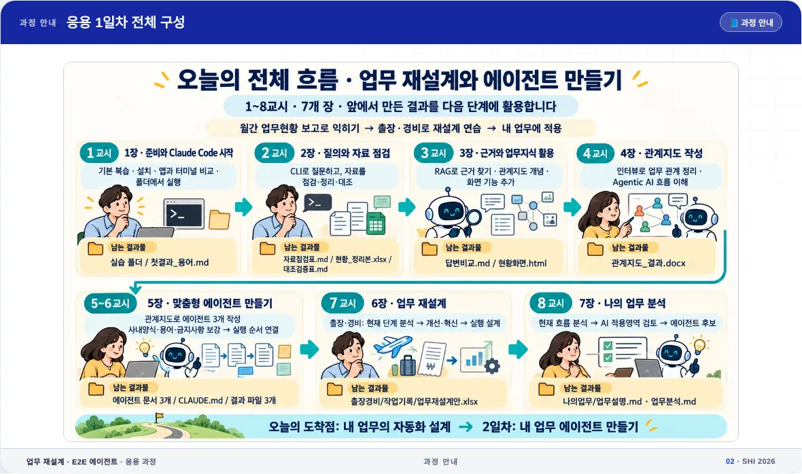
7개 장, 8교시이고 앞에서 만든 결과를 다음 단계에서 계속 씁니다. 월간 업무현황 보고로 익히고, 출장·경비로 재설계를 연습하고, 내 업무에 적용합니다.
장별 결과물을 한 번 읽어 준다(첫결과_용어.md, 자료점검표.md·현황_정리본.xlsx·대조검증표.md, 답변비교.md·현황화면.html, 관계지도_결과.docx, 에이전트 3개·CLAUDE.md, 업무재설계안.xlsx, 업무설명.md·업무분석.md). 도착점은 내 업무의 자동화 설계, 2일차는 에이전트 만들기.
질문으로 시작합니다. AI에게 실제 파일 작업을 맡기려면 무엇이 필요할까요? 작업 폴더 준비, Claude Code 시작, 첫 결과 저장입니다.
다음 장 예고 질문: "받은 자료를 그대로 써도 될까?"
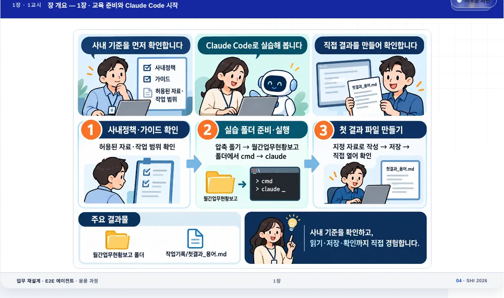
1장은 세 단계입니다. 사내 정책·가이드 확인, 실습 폴더 준비와 실행(압축 풀기, 월간업무현황보고 폴더에서 cmd, claude), 첫 결과 파일 만들기.
정책 확인이 먼저라는 순서를 강조한다(허용된 자료·작업 범위). 결과물은 작업기록/첫결과_용어.md.
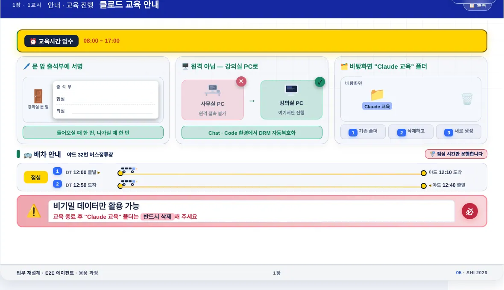
필독 안내를 소리 내어 읽습니다. 교육 시간은 08:00~17:00 엄수, 입실·퇴실 때 문 앞 출석부에 각 1회 서명, 원격이 아니라 강의실 PC에서만 진행합니다.
강의실 PC는 Chat·Code 환경에서 DRM이 자동 복호화된다(사무실 PC 원격 접속은 불가). 바탕화면 "Claude 교육" 폴더는 기존 것을 삭제하고 새로 생성. 배차: 야드 32번 버스정류장, 점심시간만 운행(DT 12:00 출발→야드 12:10 도착, 야드 12:40 출발→DT 12:50 도착). 비기밀 데이터만 사용, 교육 종료 후 폴더 삭제.
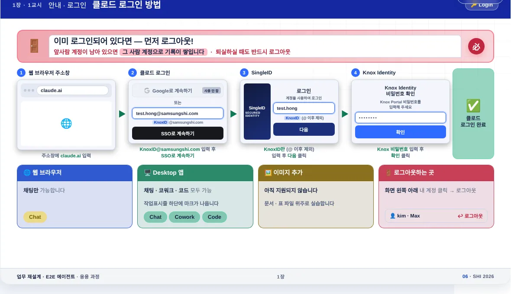
먼저 로그아웃부터 확인합니다. 앞사람 계정이 남아 있으면 그 사람 계정으로 기록이 쌓입니다.
순서: claude.ai, KnoxID@samsungshi.com 입력 후 "SSO로 계속하기"("Google로 계속하기"는 사용 안 함), SingleID에 KnoxID(@ 이후 제외), Knox 비밀번호. 웹 브라우저는 채팅만, Desktop 앱은 채팅·코워크·코드 가능. 이미지 추가는 아직 미지원이라 문서·표 파일 위주. 로그아웃은 왼쪽 아래 내 계정, 퇴실할 때도 반드시.
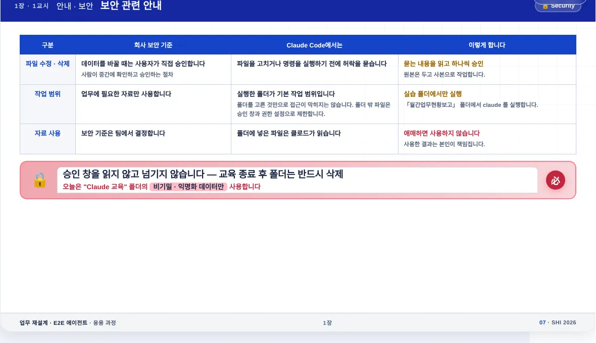
회사 보안 기준 세 가지를 Claude Code 방식으로 설명합니다. 파일 수정·삭제는 사용자 승인, 작업 범위는 실행한 폴더, 자료 사용 기준은 팀이 결정합니다.
정확히 전달할 문장: "폴더를 골랐다고 접근이 막히지는 않는다. 폴더 밖 파일은 승인 창과 권한 설정으로 제한한다." 승인 창을 읽지 않고 넘기지 않는다. 애매하면 사용하지 않고, 사용한 결과의 책임은 본인에게 있다.
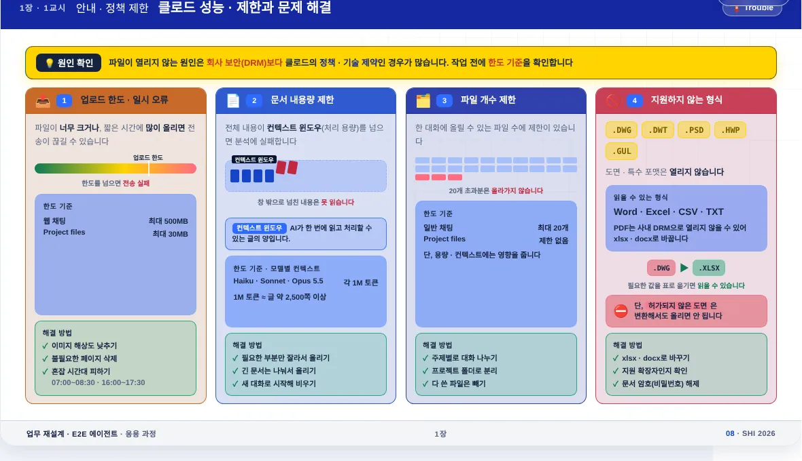
파일이 안 열릴 때 원인은 회사 보안(DRM)보다 클로드의 정책·기술 제약인 경우가 많으니 한도 기준부터 확인합니다.
업로드: 웹 채팅 500MB, Project files 30MB(혼잡 시간 07:00~08:30, 16:00~17:30 피하기). 컨텍스트: Haiku·Sonnet·Opus 5.5 각 1M 토큰(글 약 2,500쪽 이상). 파일 수: 일반 채팅 20개, Project files는 제한 없음(용량·컨텍스트엔 영향). 미지원 형식: DWG·DWT·PSD·HWP·GUL, PDF는 DRM으로 안 열릴 수 있어 xlsx·docx로 변환. 허가되지 않은 도면은 변환해서도 올리면 안 된다.
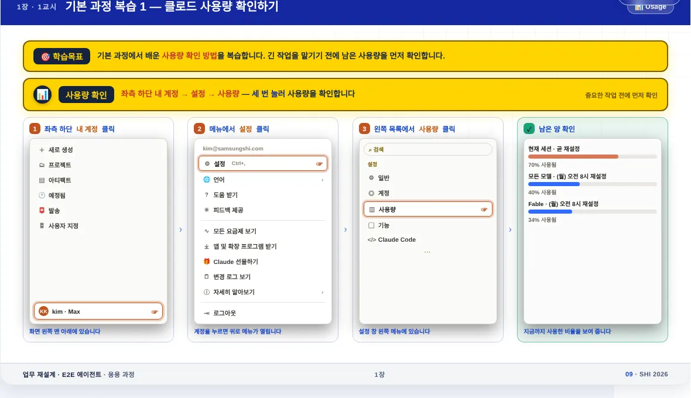
긴 작업을 맡기기 전에 남은 사용량부터 확인합니다.
왼쪽 아래 내 계정, 설정, 사용량(세 번 클릭). 현재 세션과 모든 모델의 사용 비율이 보이며 월요일 오전 8시에 재설정된다. 사용 한도 초과는 13쪽의 "에이전트가 멈추는 지점"과 연결해 말한다.
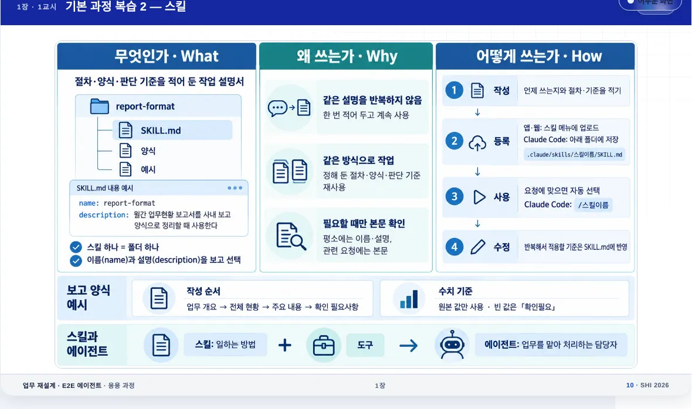
스킬은 절차·양식·판단 기준을 적어 둔 작업 설명서이고, 폴더 하나에 SKILL.md가 들어갑니다.
작성, 등록, 사용, 수정 네 단계. Claude Code는 .claude/skills/스킬이름/SKILL.md에 저장하고 /스킬이름으로 부른다. 스킬(일하는 방법)과 도구가 모이면 에이전트가 된다는 한 줄을 5장과 미리 연결해 둔다.
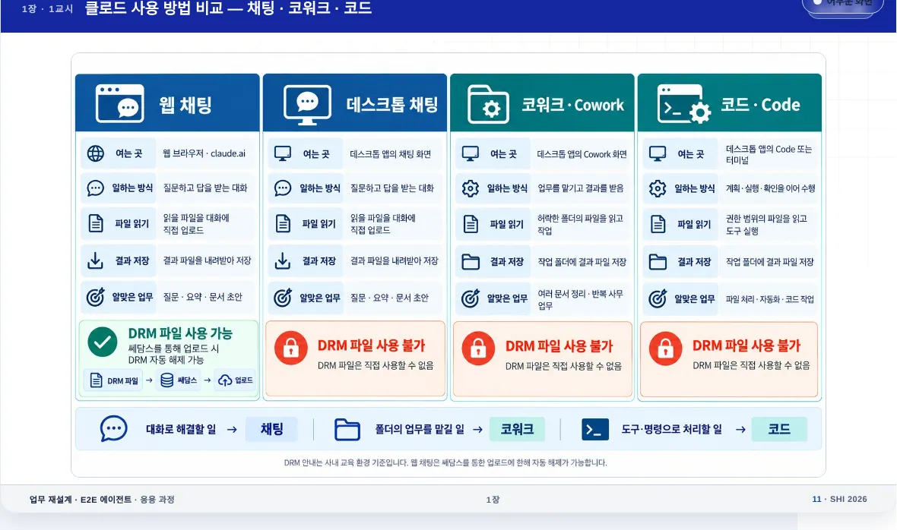
웹 채팅, 데스크톱 채팅, 코워크, 코드 중 오늘은 Code를 씁니다. 대화로 해결할 일은 채팅, 폴더의 업무를 맡길 일은 코워크, 도구·명령으로 처리할 일은 코드입니다.
DRM: 웹 채팅은 쎄담스를 통한 업로드에 한해 자동 해제가 가능하고, 데스크톱 채팅·코워크·코드는 DRM 파일을 직접 쓸 수 없다. 사내 교육 환경 기준임을 밝힌다.
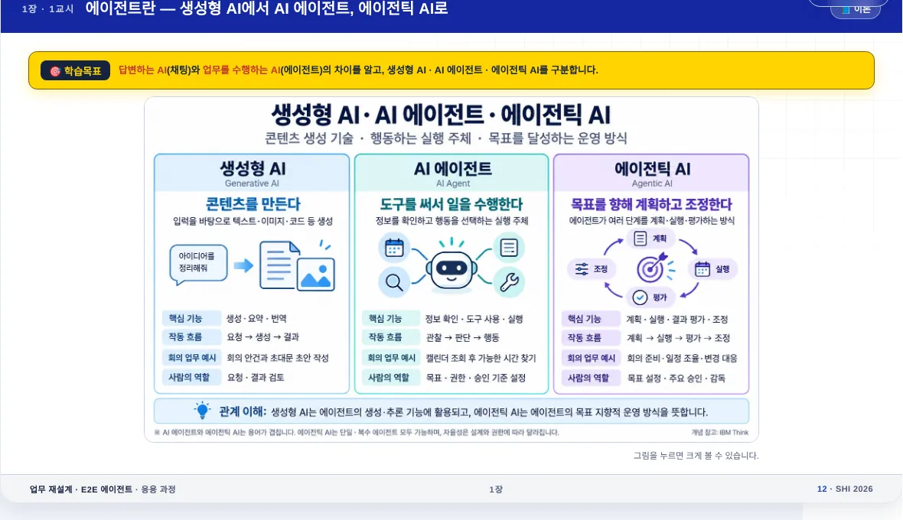
답변하는 AI(채팅)와 업무를 수행하는 AI(에이전트)의 차이를 말합니다. 생성형 AI는 콘텐츠를 만들고, AI 에이전트는 도구로 일을 수행하고, 에이전틱 AI는 목표를 향해 계획하고 조정합니다.
그림을 눌러 크게 보여 준다. 용어 암기보다 "채팅은 답, 에이전트는 일"로 정리한다.
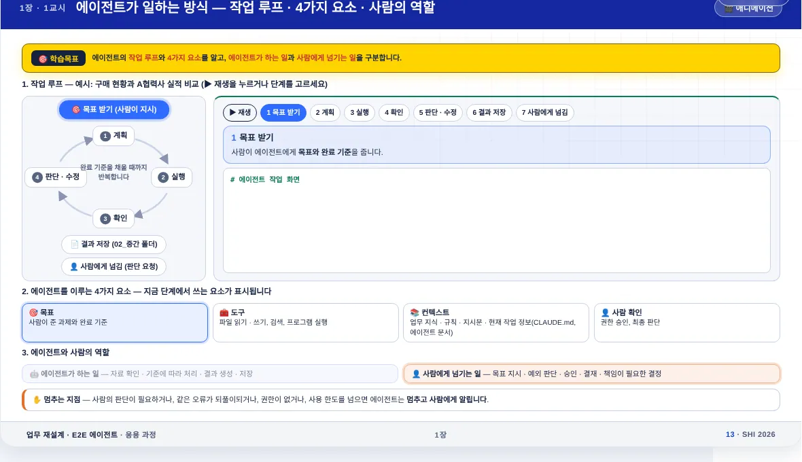
애니메이션을 재생하며 작업 루프를 설명합니다. 목표 받기, 계획, 실행, 확인, 판단·수정, 결과 저장, 사람에게 넘김. 완료 기준을 채울 때까지 반복합니다.
4요소: 목표·도구·컨텍스트(CLAUDE.md·에이전트 문서)·사람 확인. 에이전트는 자료 확인·처리·생성·저장, 사람은 지시·예외 판단·승인·결재. 멈추는 지점 네 가지: 사람 판단 필요, 같은 오류 반복, 권한 없음, 사용 한도 초과. 예시의 16번 날짜 차이와 37번 납품일 빈칸을 "확인필요"로 두고 멈추는 장면을 짚는다.
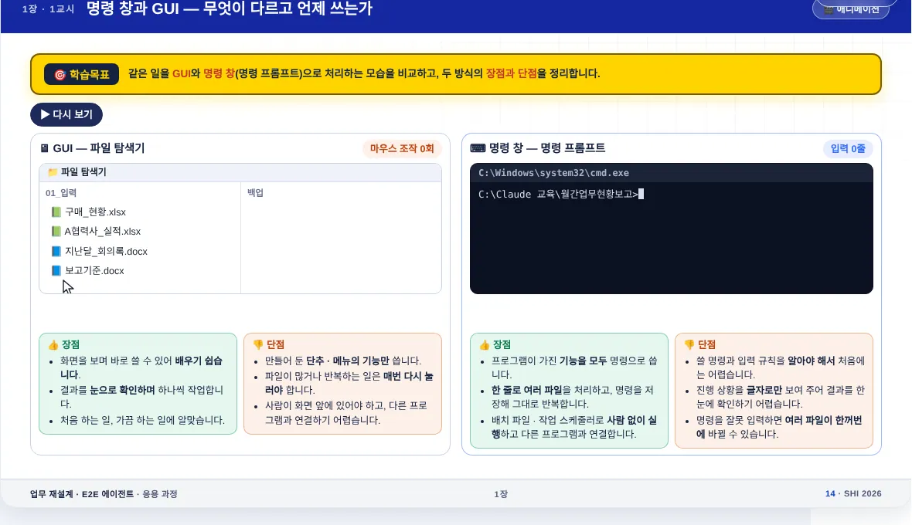
같은 일을 마우스(GUI)와 명령 창으로 비교합니다. GUI는 눈으로 보며 처음·가끔 하는 일에, 명령 창은 한 줄로 여러 파일을 처리하고 저장해 반복하는 일에 알맞습니다.
단점도 함께 말한다. 명령 창은 명령과 입력 규칙을 알아야 하고, 잘못 입력하면 여러 파일이 한꺼번에 바뀔 수 있다. 그래서 승인 창이 있다.
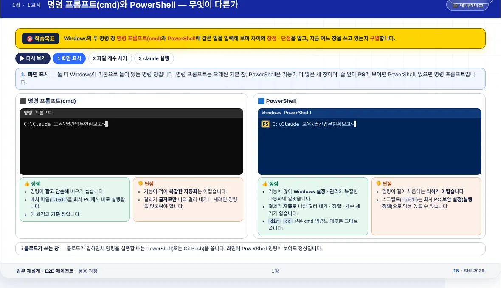
이 과정은 명령 프롬프트(cmd) 기준입니다. 창에 PS가 보이면 PowerShell, 없으면 cmd입니다.
클로드는 일할 때 PowerShell(또는 Git Bash)을 쓰므로 화면에 PowerShell 명령이 보여도 정상이다. PowerShell 스크립트(.ps1)는 회사 PC 실행 정책으로 막혀 있을 수 있다. 두 창 모두 claude를 입력하면 같은 Claude Code가 실행된다.
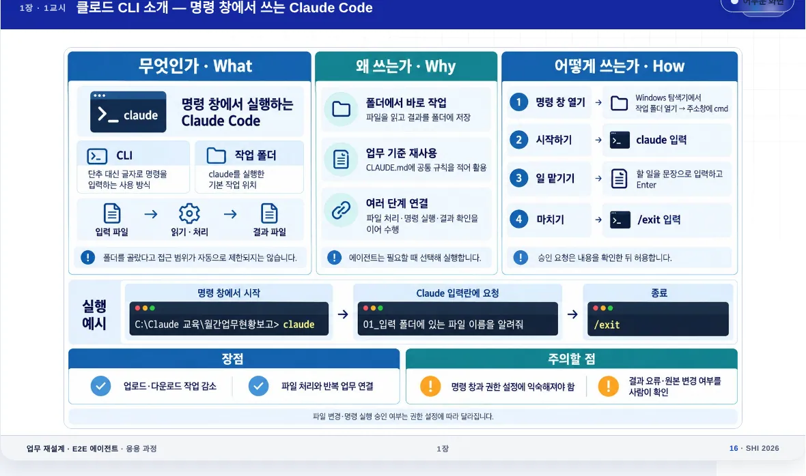
CLI는 단추 대신 글자로 명령하는 방식이고, 작업 폴더는 claude를 실행한 위치입니다. 네 단계: 작업 폴더 주소창에 cmd, claude, 할 일을 문장으로 입력, /exit.
장점: 업로드·다운로드 감소, CLAUDE.md로 업무 기준 재사용, 여러 단계 연결. 주의: 폴더를 골랐다고 접근 범위가 자동 제한되지 않고, 결과 오류와 원본 변경 여부는 사람이 확인한다. 승인 여부는 권한 설정에 따라 다르다.
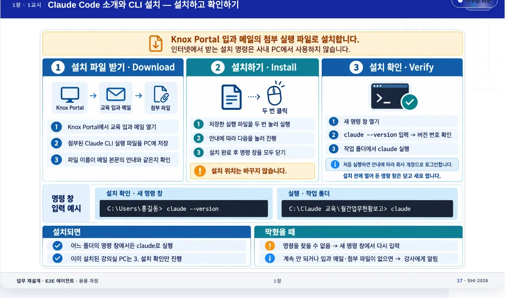
설치 파일은 Knox Portal 입과 메일에 첨부된 실행 파일만 씁니다. 인터넷에서 받는 설치 명령은 사내 PC에서 쓰지 않습니다.
강의실 PC는 이미 설치되어 3단계(새 명령 창에서 claude --version)만 진행한다. 설치 위치는 바꾸지 않고, 설치 전에 열어 둔 명령 창은 닫고 새로 연다. 명령을 찾을 수 없으면 새 창에서 다시, 계속 안 되면 강사에게 알린다.
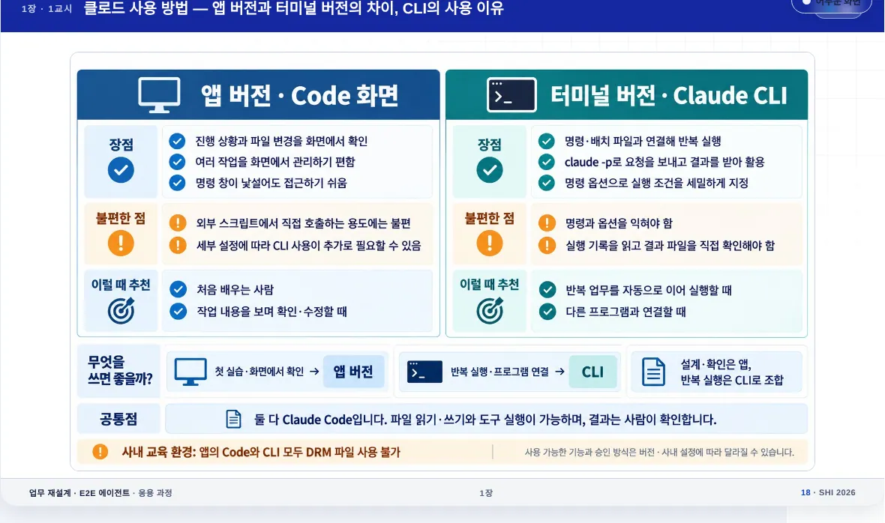
앱은 진행 상황과 파일 변경을 화면에서 확인하기 쉽고, 터미널(CLI)은 명령·배치 파일과 연결해 반복 실행(claude -p)할 때 알맞습니다.
조합 추천: 설계·확인은 앱, 반복 실행은 CLI. 공통점: 둘 다 Claude Code이고 결과는 사람이 확인한다. 사내 교육 환경에서는 둘 다 DRM 파일 사용 불가.
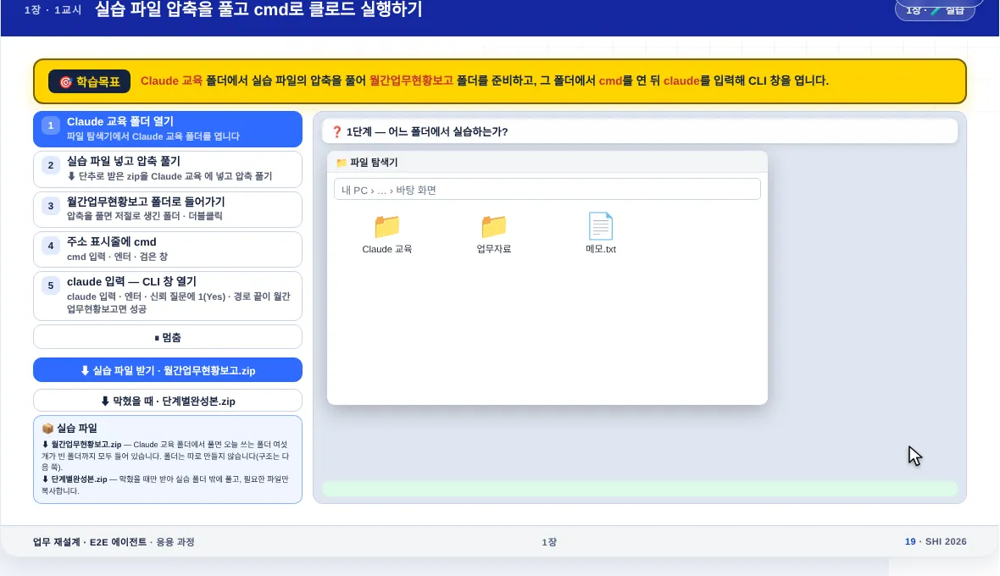
다섯 단계를 시연하며 함께 합니다. Claude 교육 폴더 열기, 월간업무현황보고.zip 넣고 압축 풀기, 폴더 더블클릭, 주소 표시줄에 cmd, claude 입력.
신뢰 질문에는 1(Yes). 성공 기준은 경로 끝이 "월간업무현황보고". 폴더는 따로 만들지 않는다(압축을 풀면 6개 폴더가 이미 들어 있다). 단계별완성본.zip은 막혔을 때만, 실습 폴더 밖에 풀어 필요한 파일만 복사한다.
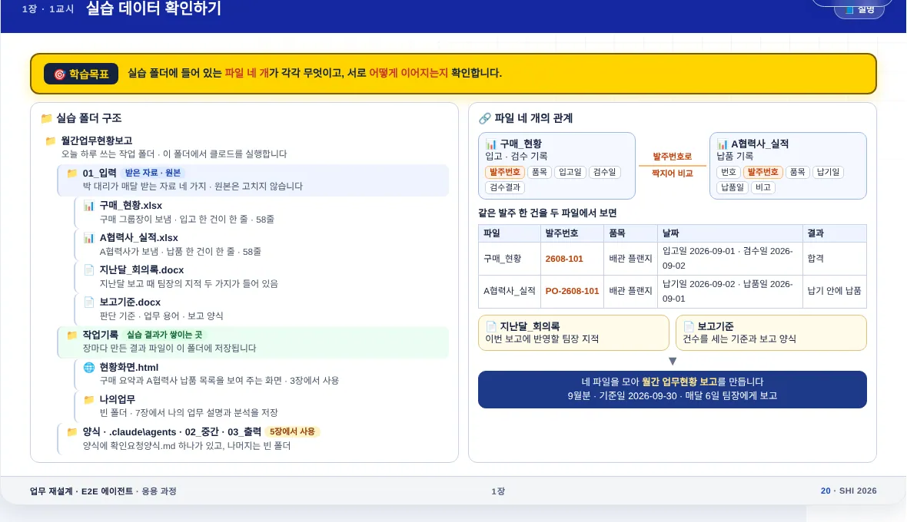
파일 네 개의 관계를 설명합니다. 구매_현황.xlsx(입고 58줄), A협력사_실적.xlsx(납품 58줄), 지난달_회의록.docx, 보고기준.docx를 모아 월간 업무현황 보고를 만듭니다.
9월분, 기준일 2026-09-30, 매달 6일 팀장에게 보고. 같은 발주가 2608-101과 PO-2608-101로 다르게 적힌 것을 미리 짚어 2장으로 잇는다. 01_입력 원본은 고치지 않는다.
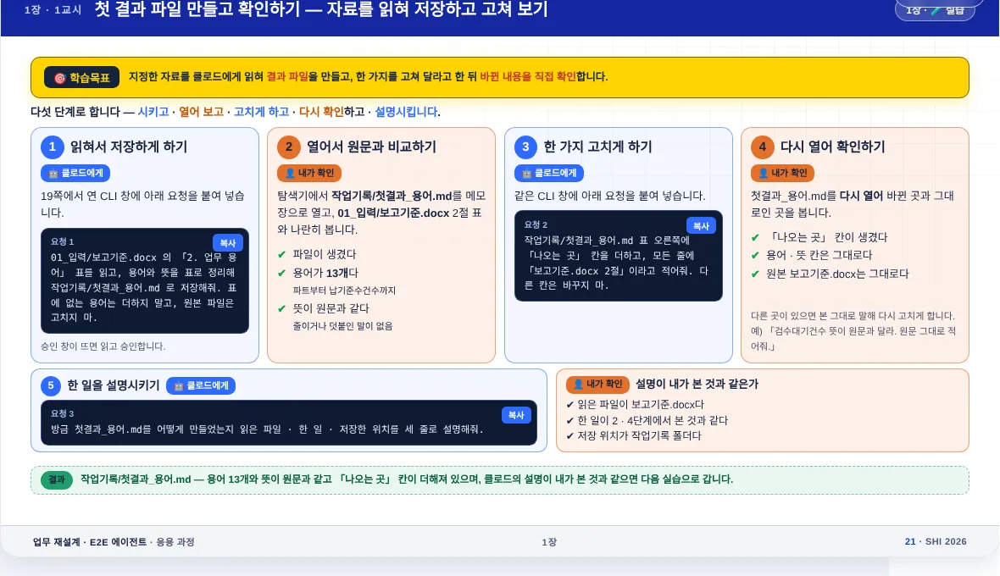
다섯 단계: 시키고, 열어 보고, 고치게 하고, 다시 확인하고, 설명시키기. 요청 1~3을 복사해 붙입니다.
확인 포인트: 용어 13개, 뜻이 원문과 같고 줄이거나 덧붙인 말이 없는지, 「나오는 곳」 칸을 더해도 다른 칸·원본은 그대로인지. 다르면 "검수대기건수 뜻이 원문과 달라. 원문 그대로 적어줘"처럼 본 그대로 말해 다시 고치게 한다.
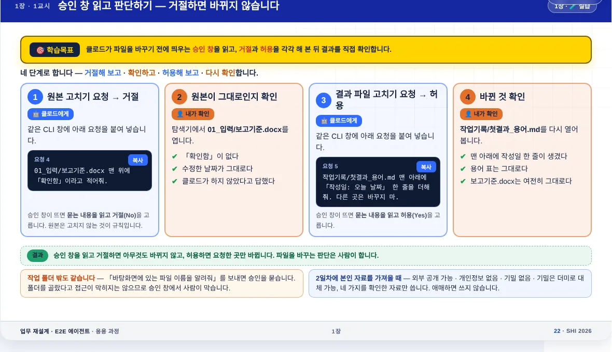
원본 고치기(요청 4)는 거절, 결과 파일 고치기(요청 5)는 허용해 보며 승인 창이 사람의 통제 장치임을 체험합니다.
거절하면 바뀌지 않고, 허용하면 요청한 곳만 바뀐다. 작업 폴더 밖(바탕화면 등)도 승인을 묻는다. 2일차에 본인 자료를 가져올 때는 외부 공개 가능, 개인정보 없음, 기밀 없음, 기밀은 더미로 대체 가능 네 가지를 확인한 자료만 쓴다.
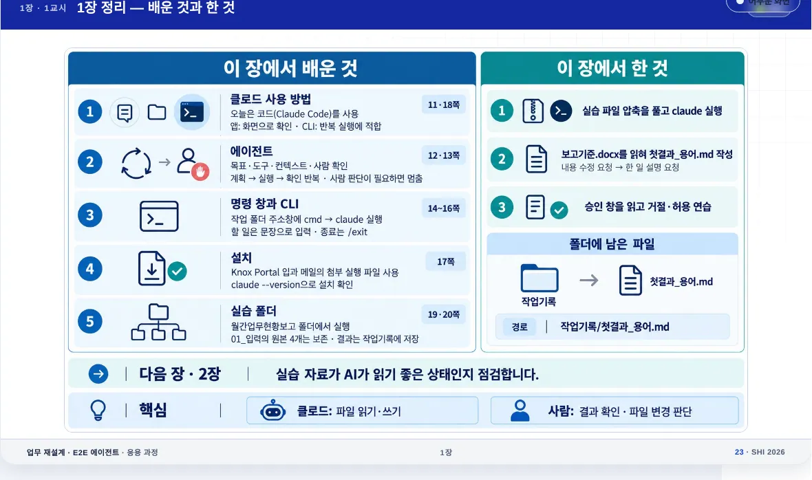
배운 것 5가지(사용 방법, 에이전트, 명령 창과 CLI, 설치, 실습 폴더)와 한 것 3가지를 확인합니다.
핵심 한 문장: 클로드는 파일 읽기·쓰기, 사람은 결과 확인·파일 변경 판단. 다음 장 예고: 실습 자료가 AI가 읽기 좋은 상태인지 점검.
2교시 · 24–38쪽
받은 자료는 그대로 쓰지 않는다. 점검하고, 사본을 맞추고, 원본과 대조한다. 빈칸은 채우지 않는다.
자료점검표.md · 현황_정리본.xlsx · 대조검증표.md
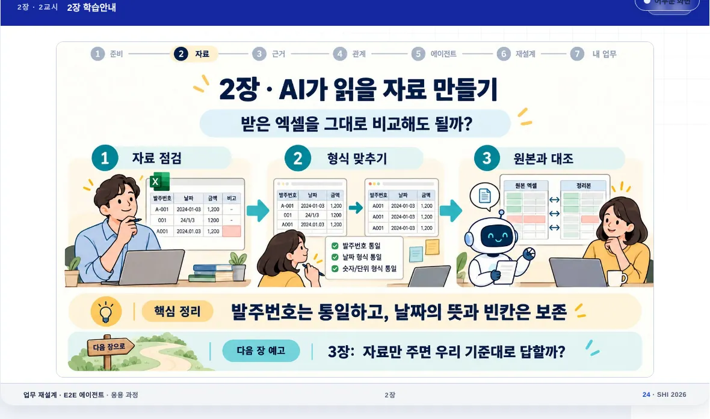
질문으로 시작합니다. 받은 엑셀을 그대로 비교해도 될까요? 자료 점검, 형식 맞추기, 원본과 대조의 세 단계입니다.
핵심: 발주번호는 통일하고 날짜의 뜻과 빈칸은 보존한다. 다음 장 예고 질문: "자료만 주면 우리 기준대로 답할까?"
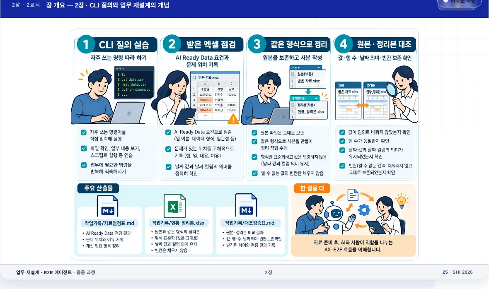
네 단계입니다. CLI 질의 실습(자주 쓰는 명령), 받은 엑셀 점검(AI Ready Data 요건), 같은 형식으로 정리(원본 보존·사본 작성), 원본과 정리본 대조.
산출물 세 개: 자료점검표.md, 현황_정리본.xlsx, 대조검증표.md. 한 걸음 더로 AX·E2E 흐름을 본다.
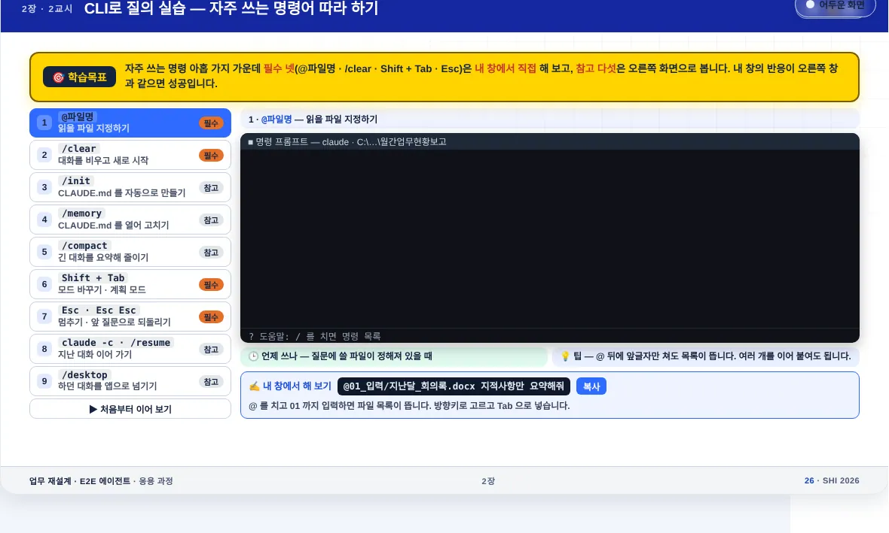
자주 쓰는 명령 9가지 중 필수 4가지(@파일명, /clear, Shift+Tab, Esc)는 내 창에서 직접 해 보고, 참고 5가지는 오른쪽 화면으로 봅니다.
@파일명=읽을 파일 지정, /clear=대화를 비우고 새로 시작, Shift+Tab=모드 바꾸기·계획 모드, Esc·Esc Esc=멈추기·앞 질문으로 되돌리기. 참고: /init(CLAUDE.md 자동 생성), /memory(CLAUDE.md 열어 고치기), /compact(긴 대화 요약), claude -c·/resume(지난 대화 이어 가기), /desktop(앱으로 넘기기). 내 창의 반응이 오른쪽 창과 같으면 성공.
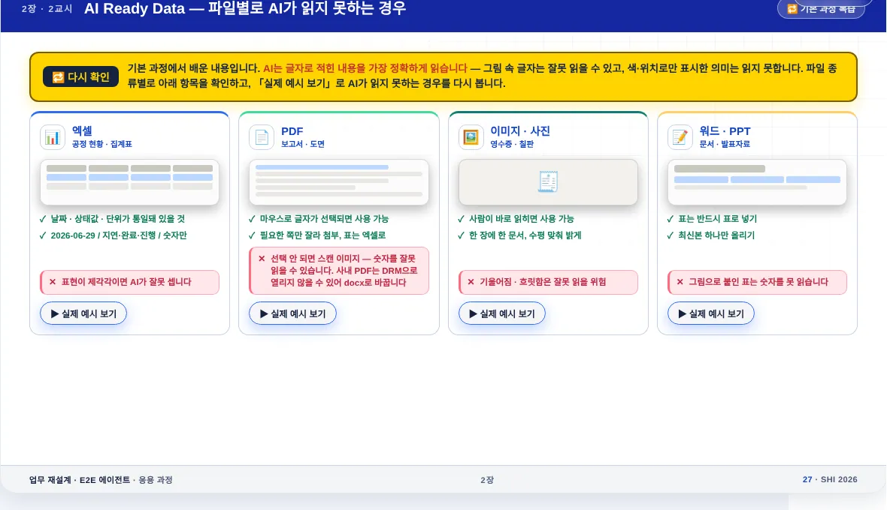
기본 과정 복습입니다. AI는 글자로 적힌 내용을 가장 정확하게 읽고, 그림 속 글자는 잘못 읽을 수 있으며, 색·위치로만 표시한 의미는 읽지 못합니다.
엑셀은 날짜·상태값·단위 통일. PDF는 글자가 드래그로 선택되면 사용 가능(30초 자가진단), 선택이 안 되면 스캔 이미지라 285를 265로 읽는 식의 오류가 난다. 사내 PDF는 DRM으로 안 열릴 수 있어 docx로 변환. 이미지는 한 장에 한 문서, 수평·밝게. 워드·PPT는 표를 그림이 아닌 표로, 최신본 하나만. '실제 예시 보기'를 눌러 보여 준다.
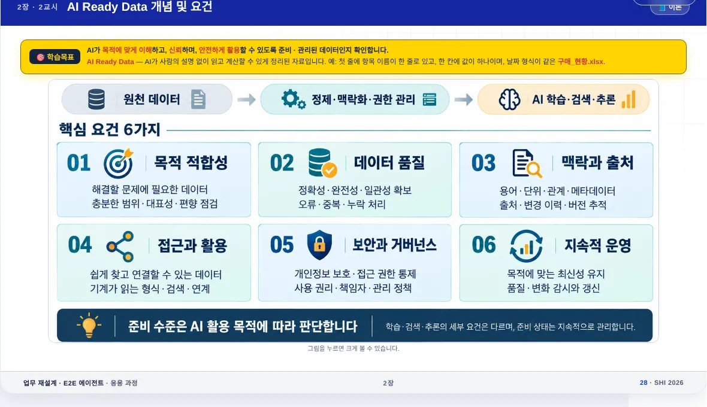
AI Ready Data는 AI가 사람의 설명 없이 읽고 계산할 수 있게 정리된 자료입니다. 목적에 맞게 이해하고, 신뢰하고, 안전하게 활용할 수 있도록 준비·관리된 데이터인지 확인합니다.
핵심 요건 6가지: 01 목적 적합성, 02 데이터 품질, 03 맥락과 출처, 04 접근과 활용, 05 보안과 거버넌스, 06 지속적 운영. 예: 첫 줄에 항목 이름이 한 줄이고, 한 칸에 값이 하나이며, 날짜 형식이 같은 구매_현황.xlsx. 교육용으로 정리한 기준이라고 밝힌다. 그림을 눌러 크게 본다.
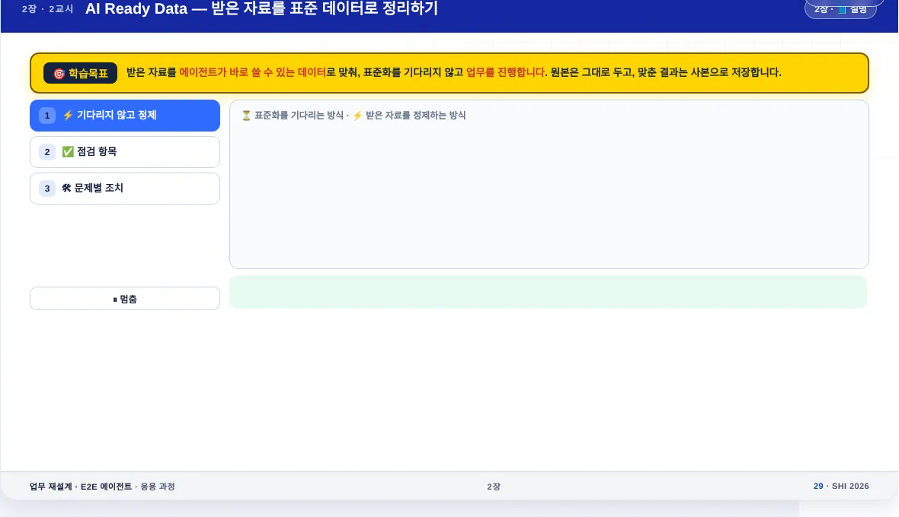
받은 자료를 에이전트가 바로 쓸 수 있는 데이터로 맞춰, 표준화를 기다리지 않고 업무를 진행합니다.
원본은 그대로 두고 맞춘 결과는 사본으로 저장한다. 월간 업무현황 보고 업무에 맞춰 설명한다.
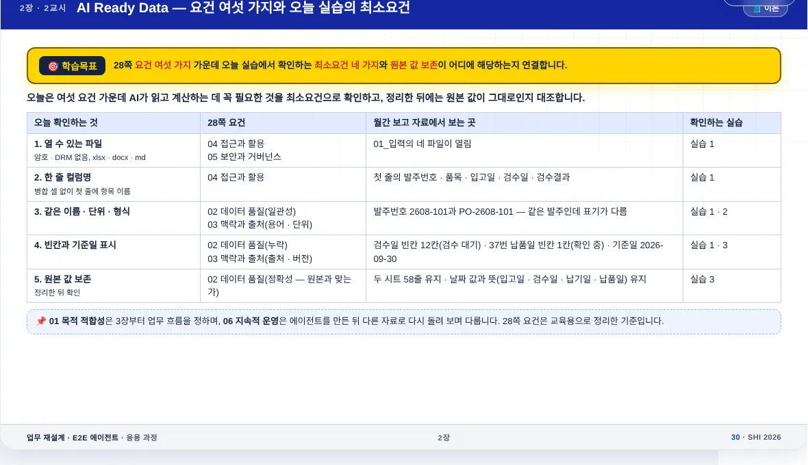
28쪽의 여섯 요건 중 오늘 확인하는 최소요건 네 가지와 원본 값 보존이 어디에 해당하는지 연결합니다.
① 열 수 있는 파일(암호·DRM 없음, xlsx·docx·md) ② 한 줄 컬럼명(병합 셀 없이 첫 줄에 항목 이름) ③ 같은 이름·단위·형식(2608-101과 PO-2608-101) ④ 빈칸과 기준일 표시(검수일 12칸, 37번 납품일 1칸, 기준일 2026-09-30) ⑤ 원본 값 보존. 01 목적 적합성은 3장부터, 06 지속적 운영은 에이전트를 만든 뒤 다룬다.
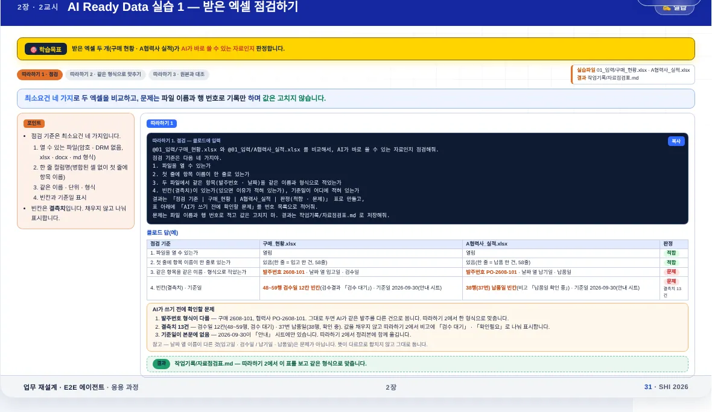
최소요건 네 가지로 두 엑셀을 비교하고, 문제는 파일 이름과 행 번호로 기록만 하며 값은 고치지 않습니다.
결과: 작업기록/자료점검표.md. 예시 답: 발주번호 형식이 다름, 결측치 13건(검수일 12칸 48~59행 + 37번 납품일 38행), 기준일이 「안내」 시트에만 있음. 날짜 열 이름이 다른 것(입고일·검수일 / 납기일·납품일)은 뜻이 달라 문제가 아니다.
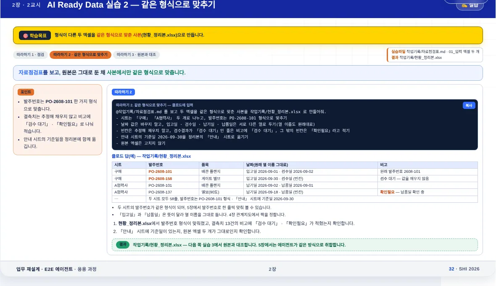
자료점검표를 보고 원본은 그대로 둔 채 사본(현황_정리본.xlsx)에서만 같은 형식으로 맞춥니다.
규칙: 시트는 「구매」「A협력사」, 발주번호는 PO-2608-101로 통일, 날짜 값은 바꾸지 않고 네 날짜 열 유지, 빈칸은 추정하지 않고 검수 대기는 비고 「검수 대기」·그 밖은 「확인필요」, 기준일 2026-09-30은 「안내」 시트로. 이 규칙이 5장 status-collect 문서의 할 일·하지 않는 것으로 들어간다고 예고한다.
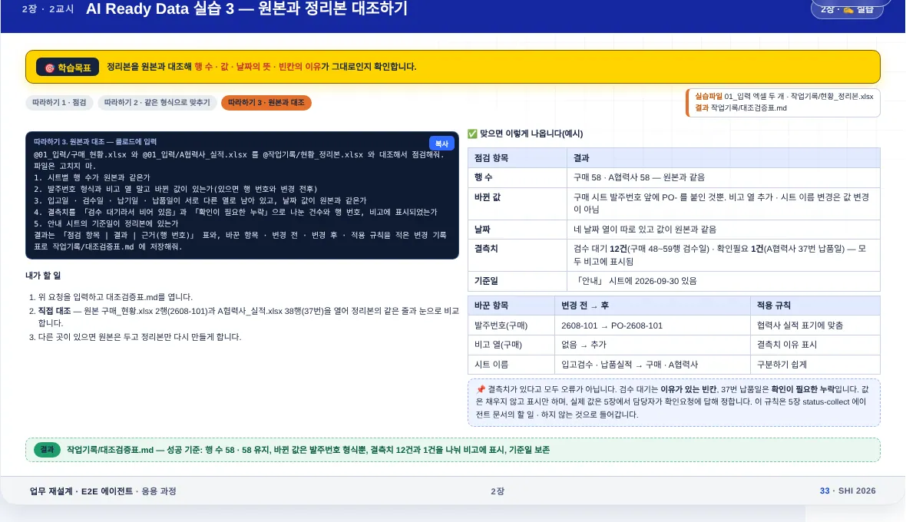
정리본이 원본과 행 수·값·날짜의 뜻·빈칸의 이유까지 그대로인지 확인합니다.
성공 기준: 행 수 58·58 유지, 바뀐 값은 발주번호 형식뿐, 결측치 검수 대기 12건과 확인필요 1건을 나눠 비고에 표시, 기준일 보존. 직접 대조: 구매_현황 2행(2608-101)과 A협력사_실적 38행(37번)을 눈으로 비교. 결측치가 모두 오류는 아니며 실제 값은 5장에서 담당자가 확인요청에 답해 정한다.
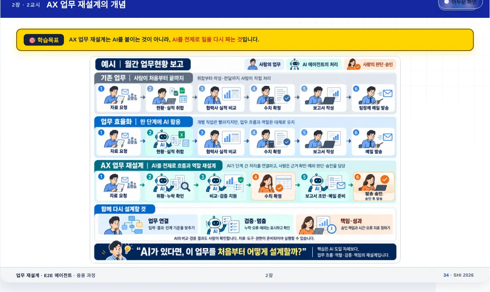
AX 업무 재설계는 AI를 붙이는 것이 아니라 AI를 전제로 일을 다시 짜는 것입니다.
기존 업무(사람이 처음부터 끝까지) → 업무 효율화(한 단계에만 AI) → AX 재설계(AI는 취합·누락 확인·비교·초안, 사람은 수치 확정·발송 승인). 함께 다시 설계할 것: 업무 연결, 검증과 멈춤, 책임과 성과. 핵심 질문: "AI가 있다면 이 업무를 처음부터 어떻게 설계할까?"
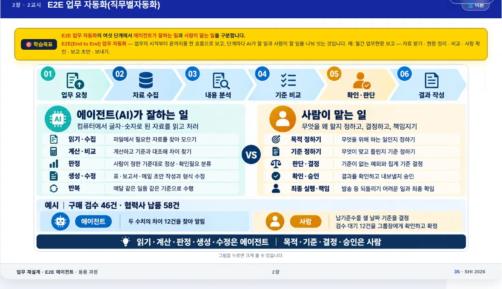
E2E는 업무의 시작부터 끝까지를 한 흐름으로 보고, 단계마다 AI가 할 일과 사람이 할 일을 나눠 잇는 것입니다.
여섯 단계에서 에이전트가 잘하는 일과 사람이 맡는 일을 구분한다. 예시 수치(구매 검수 46건·협력사 납품 58건)처럼 세는 기준이 다른 건수가 있음을 상기. 그림을 눌러 크게 본다.
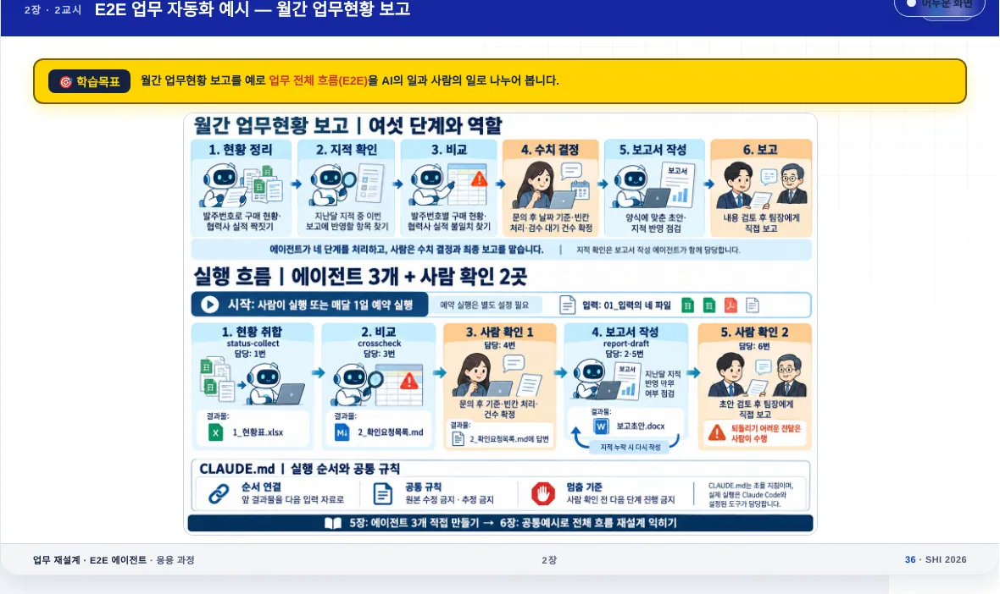
월간 보고를 여섯 단계로 나누면 에이전트가 네 단계, 사람이 수치 결정과 최종 보고를 맡습니다.
실행 흐름: status-collect → crosscheck → 사람 확인 1 → report-draft → 사람 확인 2. CLAUDE.md는 순서 연결·공통 규칙·멈춤 기준을 담는다. 5장에서 실제로 만드는 구조의 미리보기다.
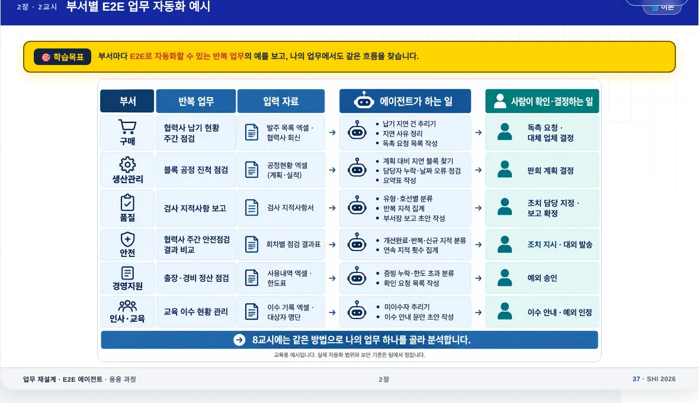
부서마다 E2E로 자동화할 수 있는 반복 업무가 있고, 나의 업무에서도 같은 흐름을 찾아보라고 안내합니다.
구매(협력사 납기 현황 주간 점검), 생산관리(블록 공정 진척 점검), 품질(검사 지적사항 보고), 안전(협력사 주간 안전점검 비교), 경영지원(출장·경비 정산 점검), 인사·교육(교육 이수 현황 관리). 8교시에 같은 방법으로 업무 하나를 고른다. 교육용 예시이며 실제 자동화 범위와 보안 기준은 팀에서 정한다.
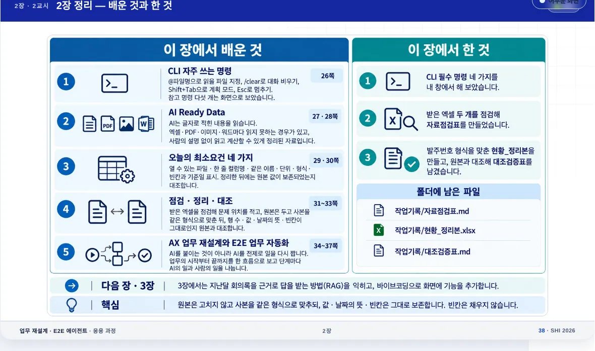
배운 것은 CLI 명령, AI Ready Data, 최소요건 4가지, 점검·정리·대조, AX·E2E입니다. 한 것은 자료점검표, 현황_정리본, 대조검증표입니다.
핵심: 원본은 고치지 않고 사본을 같은 형식으로 맞추되 값·날짜의 뜻·빈칸은 그대로 보존하고 빈칸은 채우지 않는다. 다음 장 예고: 지난달 회의록을 근거로 답을 받는 RAG와 바이브코딩.
3교시 · 39–54쪽
자료를 근거로 답하게 하려면 범위·대상·기준·예외·근거를 지시하고, 업무 용어·관계·규칙을 따로 알려 준다.
답1_그냥묻기.md · 답2_5요소.md · 답변비교.md · 현황화면.html(선택)
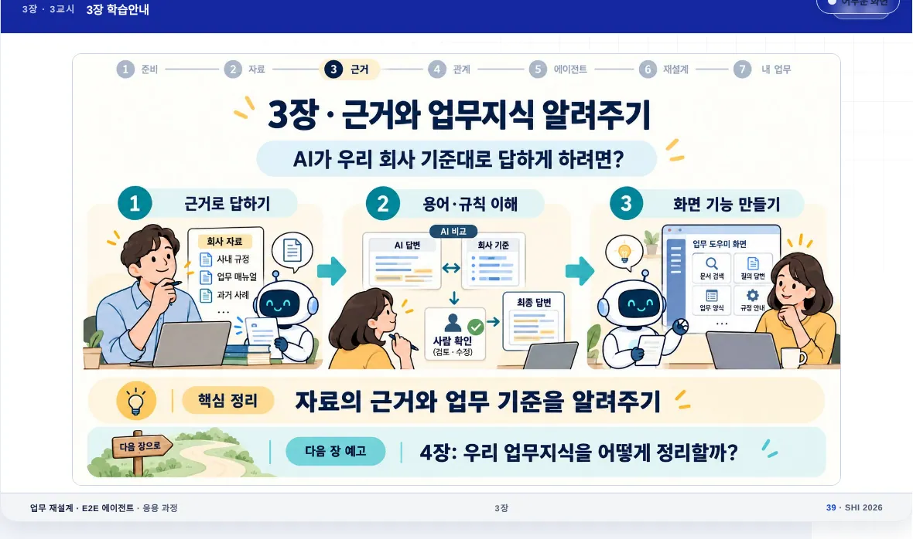
질문으로 시작합니다. AI가 우리 회사 기준대로 답하게 하려면? 근거로 답하기, 용어와 규칙 이해, 화면 기능 만들기입니다.
핵심: 자료의 근거와 업무 기준을 알려 준다. 다음 장 예고 질문: "우리 업무지식을 어떻게 정리할까?"
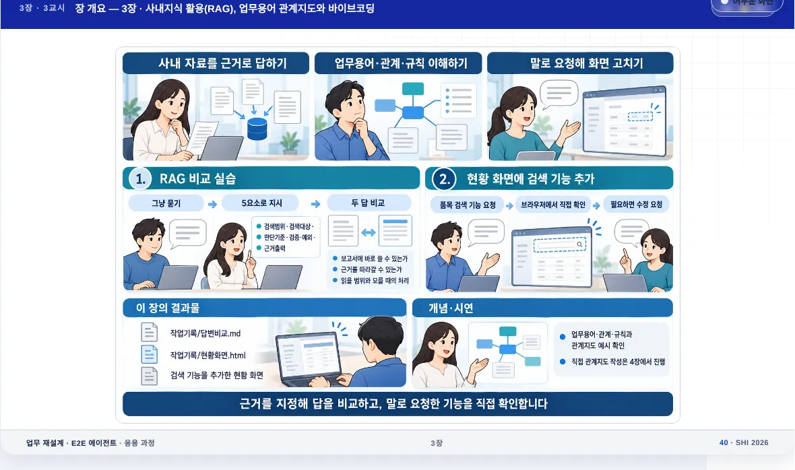
세 가지를 합니다. 사내 자료를 근거로 답하기(RAG 비교 실습), 업무용어·관계·규칙 이해하기(개념·시연), 말로 요청해 화면 고치기(현황 화면 검색, 선택).
결과물은 답변비교.md와 현황화면.html.
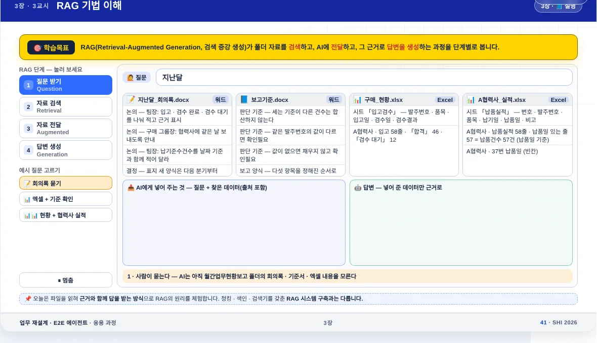
RAG는 폴더 자료를 검색하고(Retrieval), AI에 전달하고(Augmented), 그 근거로 답변을 생성(Generation)하는 과정입니다. 예시 질문을 눌러 4단계를 하나씩 보여 줍니다.
예시 질문 3가지: 회의록 묻기, 엑셀+기준 확인, 현황+협력사 실적. AI에 넣어 주는 것은 질문 + 찾은 데이터(출처 포함)이고, 답은 넣어 준 데이터만 근거로 한다. 오늘은 파일을 읽혀 근거와 함께 답을 받는 방식으로 원리를 체험하는 것이며, 청킹·색인·검색기를 갖춘 RAG 시스템 구축과는 다르다고 반드시 말한다.
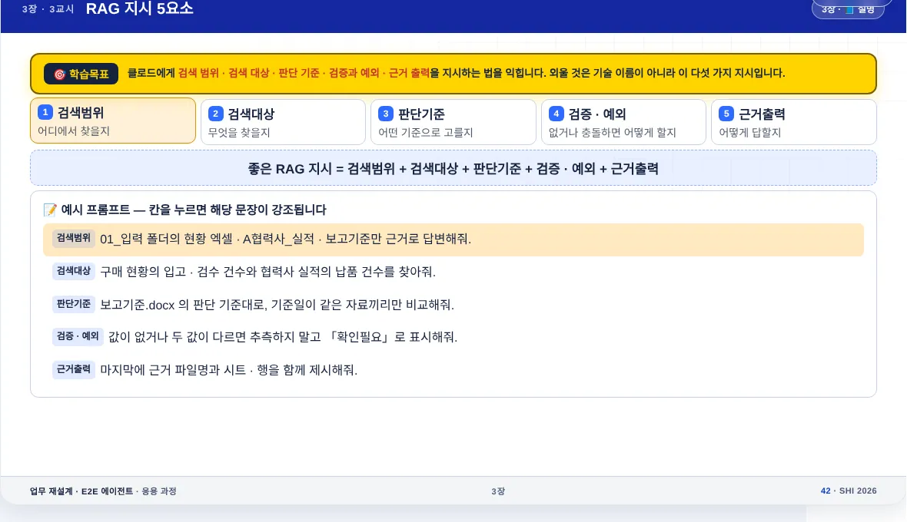
외울 것은 기술 이름이 아니라 다섯 가지 지시입니다. 검색범위(어디에서), 검색대상(무엇을), 판단기준(어떤 기준으로), 검증·예외(없거나 충돌하면), 근거출력(어떻게 답할지).
칸을 누르면 예시 문장이 강조되는 것을 보여 준다. 공식: 좋은 RAG 지시 = 검색범위 + 검색대상 + 판단기준 + 검증·예외 + 근거출력. 이후 모든 실습 입력문의 뼈대다.
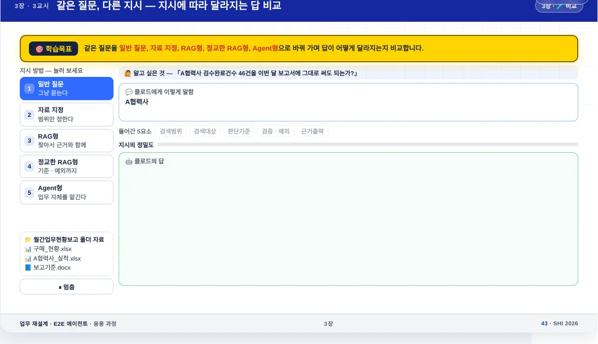
같은 질문을 일반 질문, 자료 지정, RAG형, 정교한 RAG형, Agent형으로 바꿔 가며 답이 어떻게 달라지는지 봅니다.
질문: "A협력사 검수완료건수 46건을 이번 달 보고서에 그대로 써도 되는가?" 지시가 정밀할수록 5요소가 더 들어가고 답이 정확해진다. 마지막 Agent형은 업무 자체를 맡기는 단계로 5장을 예고한다.
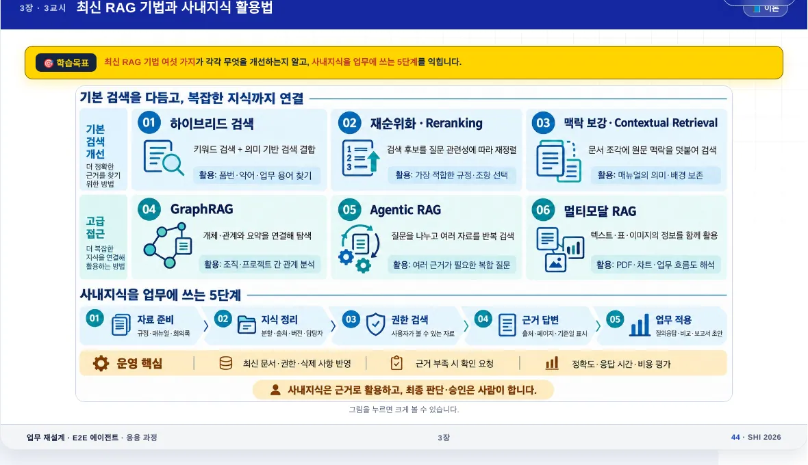
최신 RAG 기법 여섯 가지가 각각 무엇을 개선하는지 알고, 사내지식을 업무에 쓰는 5단계를 익힙니다.
기법: 하이브리드 검색, 재순위화, 맥락 보강, GraphRAG, Agentic RAG, 멀티모달 RAG. 5단계: 자료 준비, 지식 정리, 권한 검색, 근거 답변, 업무 적용. 권한 검색(보안)과 운영이 핵심이라는 점을 짚는다. 그림을 눌러 크게 본다.
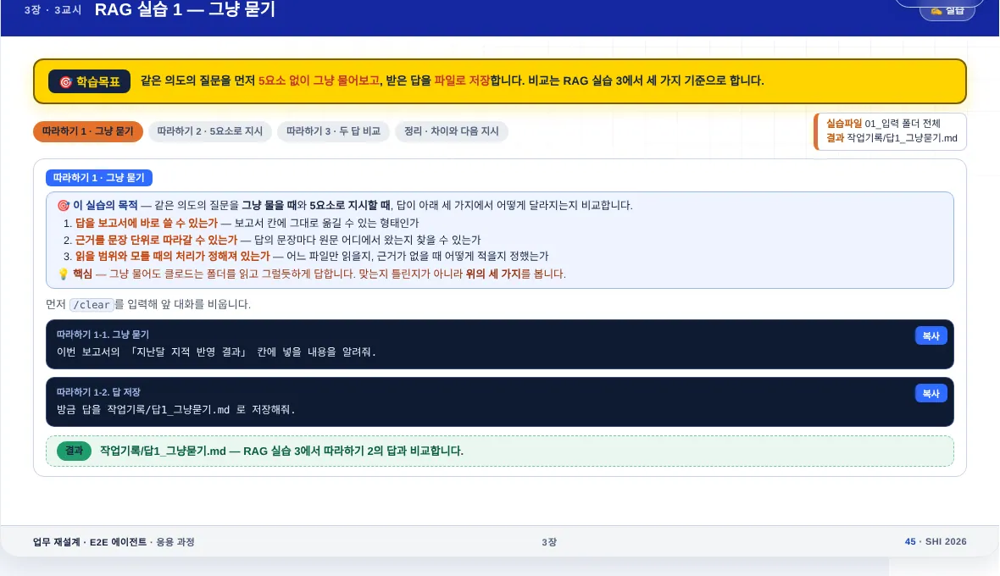
먼저 5요소 없이 그냥 물어보고 답을 작업기록/답1_그냥묻기.md로 저장합니다.
목적: 같은 질문을 그냥 물을 때와 5요소로 지시할 때 답이 세 가지에서 어떻게 다른지 비교. 비교 기준 3가지: 보고서에 바로 쓸 수 있는가 / 근거를 문장 단위로 따라갈 수 있는가 / 읽을 범위와 모를 때의 처리가 정해져 있는가. 비교는 실습 3에서 한다.
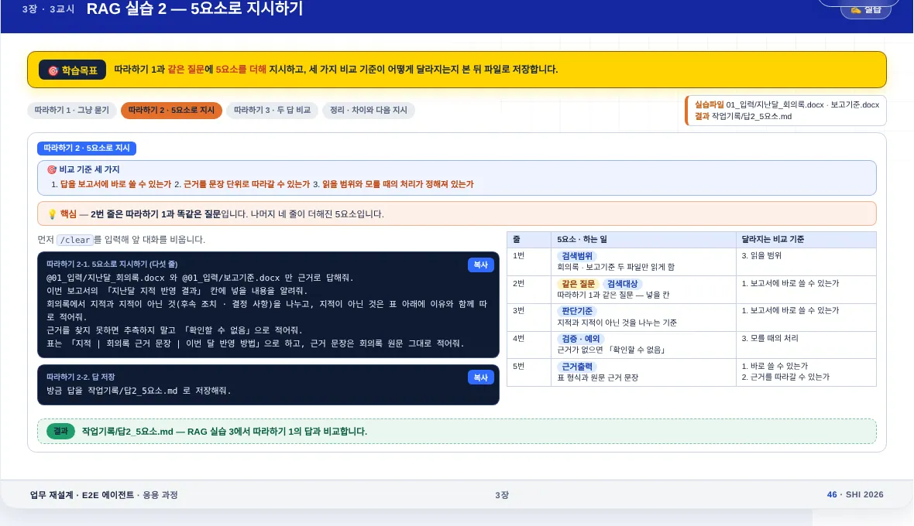
실습 1과 같은 질문에 5요소를 더해 지시하고, 답을 작업기록/답2_5요소.md로 저장합니다.
핵심: 2번 줄은 실습 1과 똑같은 질문이고 나머지 네 줄이 더해진 5요소다. 먼저 /clear로 앞 대화를 비운다(앞 답이 영향을 주지 않게). 근거 파일은 지난달_회의록.docx와 보고기준.docx.
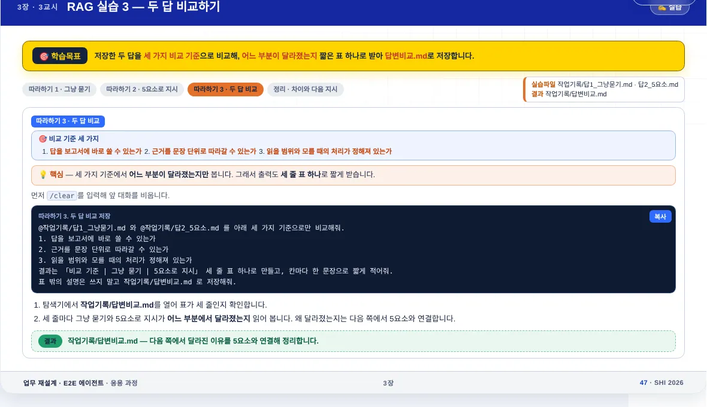
저장한 두 답을 세 가지 기준으로만 비교해 세 줄 표 하나로 받아 작업기록/답변비교.md로 저장합니다.
출력을 짧게 받는 이유는 어느 부분이 달라졌는지만 보기 위해서다. 먼저 /clear. 두 파일은 @작업기록/답1_그냥묻기.md, @작업기록/답2_5요소.md로 지정한다.
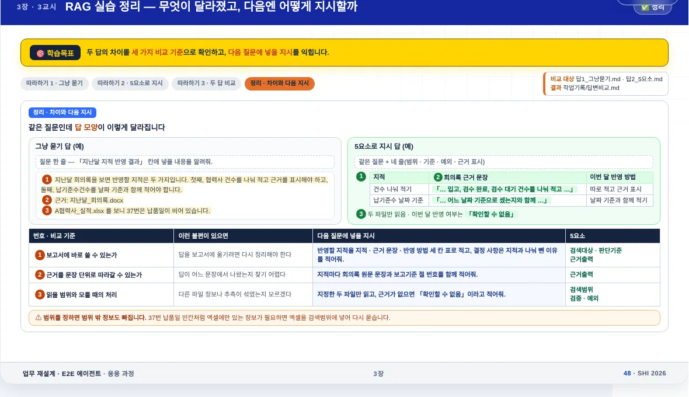
두 답의 차이를 세 가지 기준으로 확인하고, 다음 질문에 넣을 지시를 익힙니다.
5요소 답은 지적·근거 문장·반영 방법의 세 칸 표로 나오고, 범위를 두 파일로 한정해 근거가 없으면 「확인할 수 없음」으로 답한다. 주의: 범위를 정하면 범위 밖 정보도 빠진다. 37번 납품일 빈칸처럼 엑셀에만 있는 정보가 필요하면 엑셀을 검색범위에 넣어 다시 묻는다.
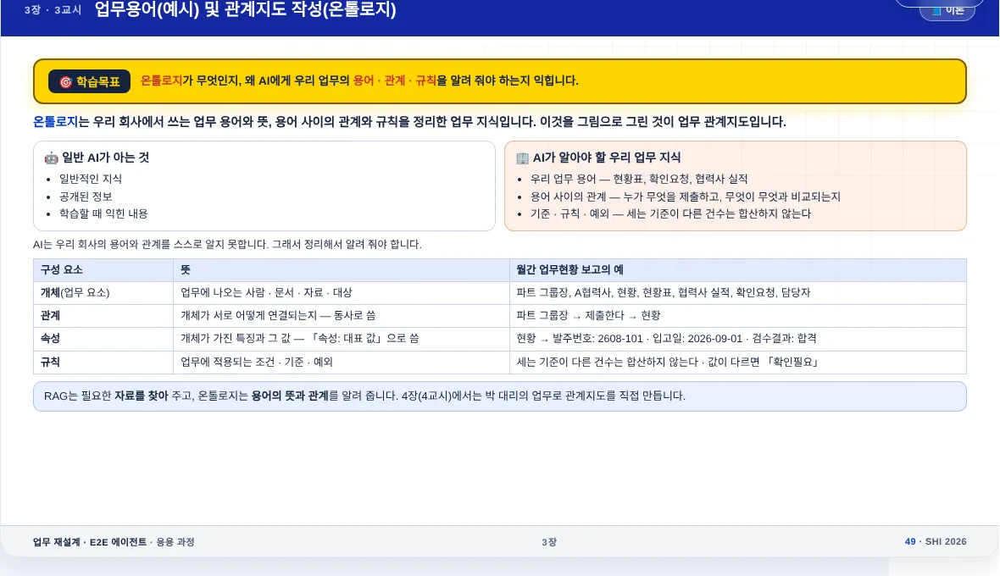
온톨로지는 우리 회사의 업무 용어와 뜻, 용어 사이의 관계와 규칙을 정리한 업무 지식이고, 이것을 그림으로 그린 것이 업무 관계지도입니다.
일반 AI는 공개 정보와 일반 지식만 안다. 우리 용어(현황표, 확인요청, 협력사 실적), 관계(누가 무엇을 제출하고 무엇이 무엇과 비교되는지), 규칙(세는 기준이 다른 건수는 합산하지 않는다)은 스스로 알지 못하므로 정리해서 알려 줘야 한다. 구성 요소는 개체(업무 요소), 속성, 관계, 규칙.
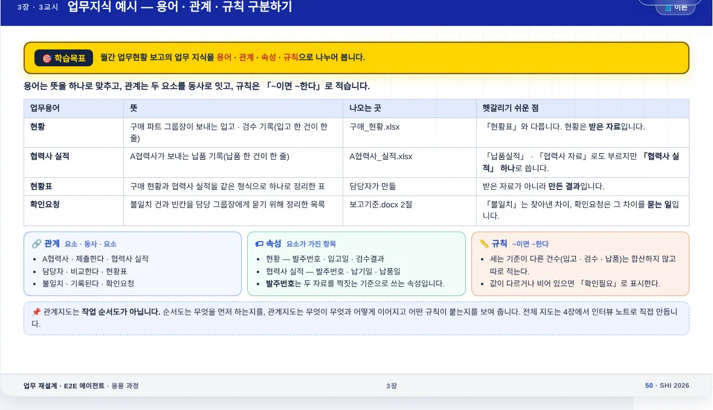
월간 보고의 업무 지식을 용어·관계·속성·규칙으로 나눕니다. 용어는 뜻을 하나로 맞추고, 관계는 두 요소를 동사로 잇고, 규칙은 「~이면 ~한다」로 적습니다.
헷갈리기 쉬운 용어: 현황(받은 자료)과 현황표(만든 결과), 「협력사 실적」 하나로 통일, 불일치(찾아낸 차이)와 확인요청(그 차이를 묻는 일). 관계지도는 작업 순서도가 아니다. 무엇이 무엇과 어떻게 이어지고 어떤 규칙이 붙는지를 보여 주는 것이다. 전체 지도는 4장에서 직접 만든다.
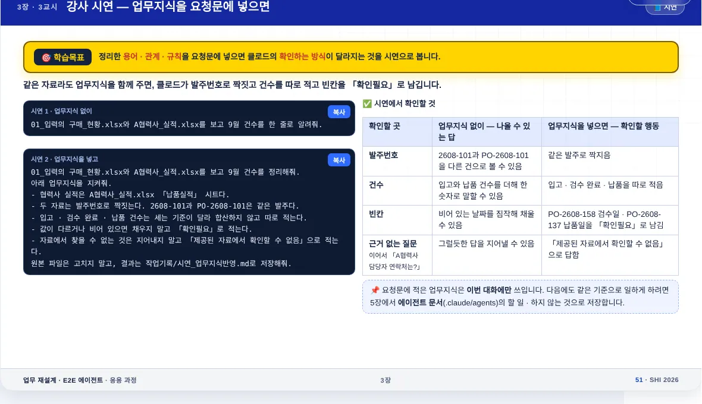
같은 자료라도 업무지식을 함께 주면 클로드가 발주번호로 짝짓고, 건수를 따로 적고, 빈칸을 「확인필요」로 남기는 것을 시연으로 보여 줍니다.
시연 1(업무지식 없이)과 시연 2(업무지식 4줄 포함: 협력사 실적 시트, 발주번호 짝짓기·2608-101=PO-2608-101, 건수 합산 금지, 빈칸 확인필요)를 같은 자료로 돌려 나란히 비교한다.
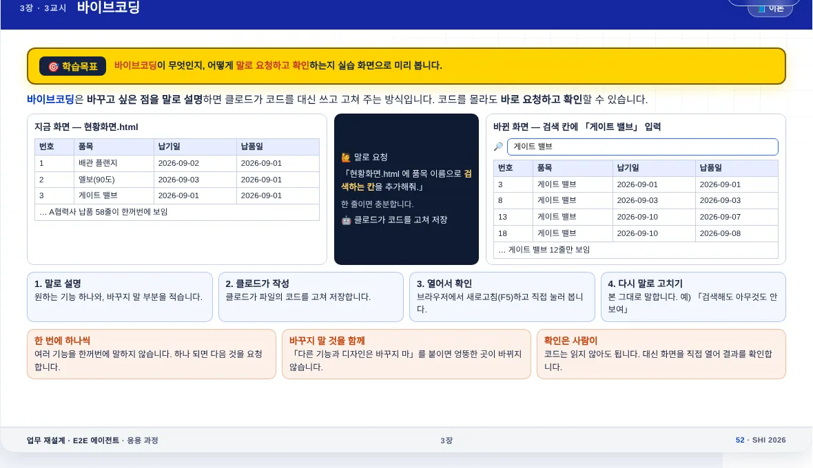
바이브코딩은 바꾸고 싶은 점을 말로 설명하면 클로드가 코드를 대신 쓰고 고쳐 주는 방식입니다. 코드를 몰라도 요청하고 확인할 수 있습니다.
현황화면.html에 "품목 이름으로 검색하는 칸을 추가해줘" 한 줄이면 충분하다는 흐름(요청, 코드 수정·저장, 화면 확인)을 미리 보여 준다.
시간이 있으면 제공된 화면에 검색 기능을 추가합니다. 기능 하나를 한 줄로 요청하고 화면을 열어 확인합니다.
먼저 /clear. 요청: 작업기록/현황화면.html에 품목 이름으로 검색하는 칸을 추가해줘. 새로고침(F5) 후 「게이트 밸브」를 넣으면 납품 58줄 중 12줄만 보이는 것이 성공 기준. 시간이 남으면 「전체 보기」 단추를 추가 요청. 선택 실습이라 진도가 늦으면 건너뛴다.
배운 것은 RAG, 5요소, 두 답 비교 기준, 온톨로지와 업무지식, 바이브코딩. 한 것은 같은 질문 두 번(그냥 묻기 vs 5요소), 답변비교, 현황화면 검색입니다.
핵심: 자료를 근거로 답하게 하려면 어디에서·무엇을·어떤 기준으로·없으면 어떻게·근거는 어떻게를 지시하고, 용어·관계·규칙은 따로 알려 준다. 다음 장 예고: 인터뷰 노트로 관계지도 만들기.
4교시 · 55–72쪽
업무를 요소·속성·관계·규칙으로 정리한 관계지도가 에이전트 문서의 재료다.
관계지도_결과.docx
이번 장은 인터뷰 노트를 읽고 업무 관계지도를 직접 만드는 장입니다. 3장에서 본 용어·관계·규칙을 이번에는 우리 손으로 뽑아냅니다.
결과물은 관계지도_결과.docx. 질문 예고: "업무를 AI에게 맡기려면 무엇부터 정리해야 할까?"
5단계로 진행합니다. 요소 뽑기, 속성 붙이기, 관계 잇기, 규칙 적기, 지도 만들기·점검.
단계 이름과 순서를 먼저 외우게 한다. 이후 쪽마다 지금 몇 단계인지 한 번씩 짚어 준다.
운영지원팀 박서연 대리의 월간 보고 업무 인터뷰 노트입니다. 읽으면서 사람, 자료, 결과물에 밑줄을 긋게 합니다.
노트는 업무를 설명하는 말일 뿐 정리된 것이 아니다. 정리하는 일이 오늘의 실습이라는 점을 분명히 한다.
먼저 이 업무가 어디서 끝나는지 찾습니다. 끝이 정해져야 거꾸로 무엇이 필요한지 보입니다.
끝 = 최종 결과물(월간 업무 현황 보고). 시작이 아니라 끝부터 잡는 이유를 한 문장으로 설명한다.
요소는 사람, 자료, 결과 세 종류로 나눠 뽑습니다. 노트에 나온 명사를 하나씩 어디에 속하는지 분류합니다.
완성본 기준 12개: 사람 4, 자료 3, 결과 5. 개수가 같지 않아도 괜찮지만 종류 구분은 지키게 한다.
클로드에게 노트를 주고 요소 목록을 만들게 한 뒤, 빠진 것과 겹치는 것이 없는지 직접 확인합니다.
AI가 뽑은 결과를 그대로 믿지 않는다. 같은 것을 다르게 부른 요소(같은 뜻 다른 이름)를 먼저 찾게 한다.
속성은 "속성: 값" 형태로 적습니다. 예를 들어 기준일: 9월 30일.
속성은 자료에만 붙인다. 사람과 결과에는 붙이지 않는다. 속성을 보면 그 자료를 무엇으로 쓰는지 알 수 있다.
자료 3개에 속성을 붙입니다. 파일 이름, 기준일, 어디서 온 것인지를 적습니다.
값을 모르면 비워 두지 말고 "확인필요"로 적게 한다. 하루 전체의 원칙과 같다.
관계는 요소 - 동사 - 요소 세 칸으로 적습니다. 예: 협력사 - 제출한다 - 실적파일.
동사가 핵심이다. "관련 있다" 같은 막연한 말은 쓰지 않게 한다. 완성본 관계는 15개.
관계를 하나씩 문장으로 읽어 보며 말이 되는지 확인합니다.
5장에서 에이전트 3개가 관계 번호를 나눠 맡는다. 지금 만드는 번호가 뒤에서 그대로 쓰인다고 예고한다.
규칙은 조건, 필수, 예외, 사람이 정할 것 네 가지로 나눠 적습니다.
규칙의 출처는 보고기준 1절. 완성본 규칙은 5개. 사람이 정할 것은 AI가 대신 정하면 안 되는 부분이다.
보고기준 1절에서 규칙 5개를 찾아 네 가지 중 어디에 속하는지 분류합니다.
예: 세는 기준이 다른 건수는 합산하지 않는다. 예외와 사람 판단을 구분하는 연습임을 강조한다.
지금까지 만든 요소, 관계, 규칙을 한 장의 그림으로 만듭니다. 클로드에게 시켜 문서로 받습니다.
이 지도는 순서도가 아니다. 무엇이 무엇과 이어지는지를 보여 주는 것이다.
지도를 만든 뒤 네 가지를 확인합니다. 선 없는 카드, 화살표 방향, 같은 뜻 다른 이름, 꼭 필요한 요소만 있는지.
점검 네 가지를 칠판이나 화면에 두고 하나씩 체크하게 한다.
문제가 보이면 증상, 원인, 고치는 법 표를 보고 고칩니다.
선이 없는 카드는 관계가 빠졌거나 필요 없는 요소다. 화살표가 거꾸로면 동사 방향을 다시 읽는다.
완성된 지도와 비교해 봅니다. 사람 4, 자료 3, 결과 5로 요소 12개, 관계 15개, 규칙 5개입니다.
똑같이 만들 필요는 없다. 숫자가 비슷하고 선 없는 카드가 없으면 충분하다고 안내한다.
서브에이전트, 스킬(SKILL.md), MCP, 승인·도구 제한이 최근 흐름입니다. 5장의 에이전트 문서가 이 흐름 위에 있습니다.
개념 소개만 하고 깊이 들어가지 않는다. 승인과 도구 제한은 5장에서 직접 쓰게 된다고 연결한다.
오늘 만든 것은 관계지도_결과.docx입니다. 관계지도는 순서도가 아니고, 에이전트에게 업무를 설명하는 기초 자료입니다.
둘째 날 준비물: 내 업무로 관계지도를 만들어 보는 것. 다음 장 예고: 이 지도를 에이전트 문서로 옮긴다.
5~6교시 · 73–88쪽
관계 묶음 하나가 에이전트 하나다. 사람이 정할 관계는 맡기지 않고, 실행은 사람 확인에서 멈춘다.
CLAUDE.md · 에이전트 문서 3개 · 1_현황표.xlsx · 2_확인요청목록.md · 보고초안.docx
지금까지 배운 것을 모아 에이전트 셋이 월간 현황 보고를 이어서 처리하게 만듭니다. 5~6교시 두 시간에 걸칩니다.
5교시는 1~4단계(문서 준비·작성), 6교시는 5~9단계(키우기·실행·점검)로 나뉜다고 먼저 알려 준다.
에이전트 문서 3개와 CLAUDE.md를 쓰고, 업무 용어와 양식을 붙이고, 도구를 제한하고, 실행해서 결과를 점검합니다.
단계 번호를 칠판에 적어 두고 매 쪽 현재 위치를 짚는다. 시간이 모자라면 점검 단계를 줄이지 말고 키우기 단계를 줄인다.
에이전트문서_틀.zip을 풀어 .claude 폴더와 CLAUDE.md를 월간업무현황보고 폴더로 옮깁니다.
.claude는 숨김 폴더라서 숨김 항목 표시를 켜야 보인다. 4장에서 열어 둔 CLI는 닫고 다시 실행한다. 에이전트가 안 보이면 /agents를 입력하거나 claude를 다시 시작한다.
에이전트는 하나가 한 가지 일만 맡습니다. status-collect는 관계 3·4, crosscheck는 5·8·9·10, report-draft는 6·7·13·14를 맡고 11·12는 사람이 합니다.
4장에서 만든 관계 번호가 여기서 그대로 쓰인다. 사람이 하는 11·12번을 AI에 넘기지 않는 것이 핵심이다.
.claude/agents 아래에 에이전트 문서 3개가 있고, 루트에 CLAUDE.md가 있습니다.
파일 위치가 틀리면 에이전트로 인식되지 않는다. 구조도를 보며 직접 확인하게 한다.
CLAUDE.md는 어떤 순서로 누구를 부를지 정하는 사령탑 문서입니다.
시작 조건에는 원본 파일을 수정하지 않는다는 규칙을 반드시 넣는다.
현황 수집 에이전트가 읽을 자료, 할 일, 남길 결과를 적습니다.
형식: 하는 일, 읽는 자료, 결과, 하지 않는 것. 결과는 파일 이름까지 정확히 적게 한다.
대조 에이전트는 현황과 협력사 실적을 비교해 불일치를 찾습니다.
불일치는 그대로 두지 않고 확인요청 목록으로 남긴다. 값을 채워 넣거나 추정하지 못하게 한다.
보고서 초안 에이전트는 확인된 값으로만 초안을 만듭니다.
확인되지 않은 값은 초안에 "확인필요"로 표시하게 한다. 사람이 최종 판단한다는 문장을 넣는다.
보고기준 2절의 업무 용어와 3절의 보고 양식, 확인요청양식.md를 에이전트에 붙여 정확도를 올립니다.
용어를 붙이면 같은 말을 같게 해석한다. 양식을 붙이면 결과 모양이 일정해진다.
에이전트마다 쓸 수 있는 도구를 정합니다. Read, Write, Bash, PowerShell 중 필요한 것만 주고 "하지 않는 것"에 제한 한 줄을 적습니다.
도구를 많이 줄수록 위험도 커진다. 읽기만 하면 되는 에이전트에 쓰기 권한을 주지 않는다.
CLAUDE.md에 실행 순서를 적어 에이전트가 차례로 움직이게 합니다.
순서: status-collect, crosscheck, (사람 확인), report-draft. 사람 확인 단계에서 반드시 멈추게 쓴다.
확인요청에는 답을 세 가지로 받습니다. 1 값을 입력한다, 2 비워 둔다, 3 기타.
예: 137번 납품일 2026-09-18, 147~158 검수 대기 12건, 116번 입고일·납품일 차이. 처리 후 동작: 1번 답이면 report-draft, 2번 답이면 status-collect부터 다시 한다.
/exit로 나가 claude로 다시 들어온 뒤 "CLAUDE.md 순서대로 진행해줘"라고 요청합니다. 멈추면 2_확인요청목록.md에 답을 쓰고 "답변대로 이어서 진행해줘"라고 합니다.
에이전트가 멈추는 것은 오류가 아니라 사람 확인 지점이다. 답을 안 쓰고 이어가면 안 된다고 알려 준다.
결과를 다섯 줄 점검표로 확인합니다.
건수 구분, 확인요청 답 반영, 전월 지적사항 반영 등을 본다. 틀리면 에이전트 문서를 고치고 다시 실행한다(/clear 후).
에이전트 3개와 CLAUDE.md로 한 달 보고를 이어서 처리했습니다. 다음은 출장·경비 검토로 업무를 다시 설계합니다.
핵심: 에이전트는 한 가지 일, 사람은 판단, 문서를 고쳐 결과를 개선. 6장 예고.
7교시 · 89–107쪽
재설계는 AI를 붙이는 일이 아니라 단계의 순서와 맡는 쪽(AI·사람)을 다시 정하는 일이다.
출장경비/작업기록/업무재설계안.xlsx (시트 4개)
이번에는 일을 AI에게 맡기기 전에 일의 순서와 맡는 사람부터 다시 정합니다. 7교시 한 시간입니다.
질문 예고: "지금 하는 순서 그대로 AI에게 맡기면 되는가?"
출장·경비 검토 업무를 현재 업무, 역할 나누기, 새 흐름, 다음에 할 일 순서로 정리합니다.
결과물은 업무재설계안.xlsx(시트 4개).
AX 재설계는 일의 순서와 누가 하는지를 다시 정하는 것입니다.
단순히 AI를 붙이는 것이 아니다. 순서와 역할을 먼저 다시 본다.
개선은 지금 순서를 빠르게 하는 것이고, 혁신은 순서와 역할을 바꾸는 것입니다. 혁신 질문 5개: 없앨 수 있나, 합칠 수 있나, 앞으로 옮길 수 있나, 맡는 사람을 바꿀 수 있나, 예외만 볼 수 있나.
5개 질문을 외우게 하고 7장 점검에서도 다시 쓴다고 알려 준다. 최소 한 단계는 바꾸도록 안내한다.
시간, 품질, 협업, 가치 네 가지 이유가 있습니다.
시간은 줄이고 품질은 일정하게, 협업은 매끄럽게, 사람은 가치 있는 일에 쓴다는 방향이다.
규칙으로 정해지고 반복되며 파일에 근거가 있으면 AI, 판단·책임·관계·되돌릴 수 없는 일은 사람입니다.
기준은 4가지. 애매하면 사람이 한다는 쪽으로 정하게 한다.
자료 모으기·옮기기, 확인·비교, 나누기·분류, 문서 만들기, 점검, 밖에서 찾기, 판단·결정.
각 종류에 AI/사람 중 누가 맞는지 짝지어 준다. 마지막 판단·결정은 사람.
실습은 업무 설명 쓰기, 현재 업무, 역할 나누기, 새 흐름, 다음에 할 일 순서입니다.
한 시간이라 속도가 중요하다. 단계별 목표 시간을 칠판에 적는다.
박서연 대리가 출장비 신청 10건을 검토합니다. 규정에 맞는 5건, 한도 초과 3건(사유 있는 건 1), 증빙 누락 1건, 중복 의심 1건입니다.
규정: 식비 1인 1일 30,000원, 숙박 1박 100,000원, 교통비는 증빙 필요, 모든 항목에 증빙, 중복은 제외. 자료는 출장경비.zip.
모든 업무는 시작, 자료, 처리, 전달로 나뉩니다.
이 네 가지로 업무 설명을 쓰게 하는 것이 다음 쪽 실습이다.
업무설명.md의 "## 네 가지" 아래 다섯 줄에 시작·자료·처리·전달과 빠뜨리기 쉬운 일을 적습니다.
빠뜨리기 쉬운 일(예외, 확인)을 꼭 적게 한다. 짧게 쓰는 것이 낫다.
질문 6개로 단계를 찾고 기준 3개로 잘라 세 칸(보는 자료·하는 일·남는 것)에 적습니다.
자르는 기준을 먼저 보여 준다. 칸 이름이 이후 표의 열 이름이 된다.
업무설명을 "1. 현재 업무" 표로 정리합니다.
지금 순서 그대로 쓴다. 고치는 것은 다음 단계.
"2. 역할 나누기"에서 각 단계를 AI와 사람 중 하나로 정합니다.
이유를 한 줄씩 적게 한다. 판단·책임은 사람.
"3. To-Be 흐름"에서 혁신 질문 5개로 순서와 역할을 바꾼 새 흐름을 만듭니다.
최소 한 단계를 없애거나 합치거나 옮긴다. 바뀐 이유를 적는다.
"4. 다음에 할 일"에 에이전트로 만들 후보를 3개 이내로 적습니다.
3개 이내로 제한. 만들 에이전트의 입력, 일, 결과를 같이 적는다.
후보를 CLAUDE.md와 에이전트 파일로 옮겨 적는 방법을 봅니다.
5장에서 만든 문서 형식과 같다. 시간이 있으면 한 개만 만든다.
업무재설계안.xlsx와 에이전트 문서를 확인하고 실행해 봅니다.
결과가 이상하면 문서를 고치고 다시 실행. 엑셀의 시트 4개가 맞는지 확인한다.
개선과 혁신의 차이, 시작·자료·처리·전달, 세 칸 표, 역할 나누기를 정리합니다.
마지막 질문: 내 업무에서는 무엇을 바꿀 수 있나? 7장 예고.
8교시 · 108–117쪽
같은 방법을 내 업무에 적용한다. 이 분석표가 2일차 에이전트 제작의 입력이다.
작업기록/나의업무/업무설명.md · 업무분석.md
마지막 교시입니다. 지금까지 배운 방법으로 내 업무를 직접 분석합니다.
결과물: 작업기록/나의업무/업무설명.md, 업무분석.md.
업무 선택, 설명 쓰기, 현재 업무 정리, AI/사람 나누기, 에이전트 후보 정하기 순서입니다.
시간 배분을 안내한다. 둘째 날 과제와 이어진다고 말한다.
분석은 여섯 단계 순서로 하고 고르는 기준이 있습니다. 먼저 출장경비 CLI를 닫고 월간업무현황보고 폴더에서 claude를 실행해 작업기록/나의업무에 저장합니다.
이전 CLI를 닫지 않으면 이전 대화가 섞인다. 저장 위치를 틀리지 않게 한다.
마땅한 업무가 없으면 예제를 씁니다. 구매·조달 견적 비교, 생산·공정 블록 지연 등이 있습니다.
예제 압축파일(예: 예제업무_구매조달.zip)을 쓴다. 가능하면 자기 업무를 우선하도록 권한다.
반복되고, 파일이 있고, 결과물이 남는 업무를 고릅니다. 이번 과제에서 피할 업무도 있습니다.
기밀 자료가 들어 있는 업무는 피한다. 너무 큰 업무는 한 부분만 고른다.
언제 시작하고, 무엇을 받고, 무엇을 하고, 누구에게 넘기는지 적습니다.
네 가지가 빠지면 이후 표를 못 채운다. 모르는 값은 "확인필요".
세 칸(보는 자료·하는 일·남는 것) 표로 현재 업무를 정리합니다.
지금 하는 그대로 쓴다. 개선은 다음 쪽.
단계마다 AI와 사람을 나누고 혁신 질문 5개를 적용합니다.
최소 한 단계는 바꾸도록 한다(92쪽). 판단·책임은 사람이다.
에이전트 후보 3개 이내에 입력, 일, 결과, 사람 확인 지점을 적습니다.
사람 확인 지점이 없는 후보는 다시 쓰게 한다. 3개를 넘기지 않는다.
오늘 분석한 업무로 둘째 날에 직접 에이전트를 만듭니다.
오늘 만든 업무분석.md를 둘째 날에 가져오도록 안내한다. 질문 시간을 준다.
1교시 전 · 1–8쪽
오늘은 공통예시(박서연 대리의 출장·경비 검토)를 따라 하고, 오후에는 나의 업무로 E2E 업무 자동화 에이전트를 만들어 제출합니다.
17시에 끝나고 제출은 교육 종료 후 1일 이내라고 처음에 말한다.
여덟 교시를 네 개 장으로 진행합니다. 1~3교시는 공통예시로 따라 하고, 4교시부터 나의 업무로 직접 만듭니다.
교시별 장: 1교시 1장, 2~3교시 2장, 4교시 3장, 5~8교시 4장. 과제는 오케스트레이션까지 개인 역량에 맡기고, 단일 에이전트도 업무 쪼개기 단위에 포함되면 가능하다. 1주 뒤 나의 업무 데이터를 가지고 입과한다는 전제를 확인한다.
박서연 대리의 업무를 에이전트 세 개로 만들면 사람에게 어떤 일이 남는지 봅니다. 정리·점검·초안은 AI가, 판단·발송·승인은 사람이 합니다.
에이전트: claim-intake(메일·영수증을 신청 표로), claim-check(확인 요청·통과 목록으로 분리), review-draft(의견·보완 요청 초안·검토표). 사람에게 남는 것은 예외 판단, 메일 발송, 팀장 승인.
1~3교시는 따라하기(도움을 받는 수행), 4~8교시는 직접 만들기(독립 수행)입니다. 어느 교시든 내가 먼저 쓰고 클로드에게는 검토 질문만 받습니다.
직접 만들기에는 대신 만들게 하는 요청문이 없다. 평가는 직접 만든 결과물로 한다. 실습 난이도 탭의 기본(첫 줄 예시·힌트)과 도전(빈 틀)은 한 번 고르면 모든 쪽에 적용된다. 화면 읽는 법: 왼쪽 목차(실습 쪽은 녹색), 오른쪽 용어 배너.
강의실 PC에서만 진행합니다. 출석부에 입실·퇴실 때 각각 서명하고, 바탕화면 "Claude 교육" 폴더는 기존 폴더를 삭제하고 새로 만듭니다.
교육 시간 08:00~17:00 엄수. 원격 접속은 안 된다. 점심 때만 야드 32번 정류장 셔틀 운행(DT 출발 12:00·12:50, 야드 도착 12:10 / 야드 출발 12:40, 도착 12:50). 비기밀 데이터만 사용하고, 끝나면 폴더를 반드시 삭제한다.
이미 로그인되어 있으면 먼저 로그아웃합니다. 앞사람 계정이 남아 있으면 그 사람 계정으로 기록이 쌓입니다.
claude.ai 접속 → 이메일 칸에 KnoxID@samsungshi.com 입력 후 SSO로 계속하기(Google로 계속하기는 쓰지 않음) → SingleID에 KnoxID만 입력 → Knox 비밀번호 확인. 웹 브라우저는 채팅만, Desktop 앱은 채팅·코워크·코드 모두 가능. 이미지 추가는 아직 지원되지 않으니 문서·표 파일 위주로 실습한다. 로그아웃은 왼쪽 아래 내 계정에서 한다.
파일을 고치거나 명령을 실행하기 전에 클로드가 허락을 묻습니다. 묻는 내용을 읽고 하나씩 승인하고, 원본은 두고 사본으로 작업합니다.
실행한 폴더 안의 파일만 읽고 쓰므로 실습 폴더에서 claude를 실행한다. 보안 기준은 팀에서 결정하고 사용한 결과는 본인이 책임진다. 애매하면 사용하지 않는다. 승인 창을 읽지 않고 넘기지 않는다.
파일이 안 열리는 원인은 회사 보안(DRM)보다 클로드의 정책·기술 제약인 경우가 많습니다. 네 가지를 봅니다.
①업로드 한도·일시 오류(혼잡 시간 07~08시·16~17시 피하기) ②컨텍스트 윈도우 초과(필요한 부분만, 새 대화로 비우기) ③일반 채팅은 파일 최대 20개 ④지원하지 않는 형식(.DWG .DWT .PSD .HWP .GUL)은 xlsx·docx로 바꾼다. 허가되지 않은 도면은 변환해서도 올리면 안 된다.
1교시 · 9–17쪽
오늘은 1일차 내용을 복습하고, 공통예시 자료(출장경비.zip)로 실습 준비를 끝냅니다.
출장경비 폴더, 시작 전 점검 결과
1교시는 1일차 복습과 실습 준비입니다. 재설계 흐름, 보안·데이터·CLI, 에이전트·오케스트레이션을 복습합니다.
핵심 정리: 1일차 흐름을 복습하고 2장 실습을 준비한다. 다음 교시 예고: 2~3교시에 공통예시로 서브에이전트를 만들고 연결한다.
1교시는 다섯 순서로 진행합니다. 시작 전 점검, 재설계 흐름 복습, 보안·데이터 복습, CLI 따라 하기, 공통예시 자료 받기.
자료 확인 기준 다섯 가지: 구조·일관성·품질·근거·보안. 이 장을 마치면 출장경비 폴더와 시작 전 점검 결과가 남는다.
오늘 준비가 되었는지 여섯 가지를 확인합니다.
확인: 1일차 업무설명.md·업무분석.md, 1주 동안 준비한 나의 업무 자료(xlsx·docx·csv·txt), 자료의 보안(암호·DRM·대외비·국가 데이터·개인정보 없음), 1일차 6장 에이전트 후보 두 개 설명, 서브에이전트 문서 폴더, CLI 실행 경험. 못 한 항목은 안내된 쪽으로 보낸다(자료 없음 68쪽, 보안 13쪽, 재설계 흐름 12쪽, 폴더 48쪽, CLI 15쪽).
1일차 7장의 나의 업무 분석 순서를 다시 봅니다. 업무 하나 고르기, 업무 설명, As-Is 분석, AI 적용영역 검토, 에이전트 후보, 2일차 준비입니다.
따라하기마다 같은 순서를 쓴다는 점을 말해 둔다. 고를 업무와 피할 업무 기준도 함께 다시 본다.
암호·DRM 파일, 대외비·국가 데이터, 개인정보가 든 파일, 지원되지 않는 형식은 쓰지 않습니다.
DRM PDF가 열리지 않을 때의 세 단계 해결법이 그림에 있다. 나의 업무 자료를 가져온 사람은 이 기준으로 한 번 더 확인하게 한다.
자료가 AI Ready Data 기준 다섯 가지에 맞아야 에이전트가 값을 잘못 읽거나 추정하지 않습니다.
기준: 구조·일관성·품질·근거·보안. 3장 검증하기에서 나의 업무 자료도 이 기준으로 점검한다고 예고한다.
명령 아홉 가지를 보면서 바로 따라 합니다. 오른쪽 창과 내 창의 반응이 같으면 성공입니다.
@파일명, /clear, /init, /memory, /compact, Shift+Tab(계획 모드), Esc·Esc Esc(멈추기·되돌리기), claude -c·/resume, /desktop. 오늘 자주 쓰는 것은 @파일명, /clear, Esc, /exit.
출장경비.zip을 받아 Claude 교육 폴더에서 풀고 새 출장경비 폴더로 시작합니다.
1일차 출장경비 폴더가 있으면 먼저 이름을 출장경비_1일차로 바꾼다. 풀고 나서 CLAUDE.md(빈 파일)·01_입력·예비자료가 보이면 준비 완료. 나의 업무 자료가 없으면 68쪽에서 부서별 예제 업무를 받는다.
1교시 핵심 다섯 가지(재설계 흐름, 보안정책, AI Ready Data, CLI, 공통예시 자료)를 정리합니다.
새로 생긴 것: 출장경비/ 폴더(와 필요하면 예제업무 폴더). 다음 장: 2장에서 9단계를 따라 에이전트 세 개(claim-intake, claim-check, review-draft)를 만들고 CLAUDE.md로 연결한다.
2~3교시 · 18–59쪽
공통예시로 9단계를 따라 하며 에이전트 세 개를 만들고 CLAUDE.md로 연결합니다. 내가 먼저 쓰고 클로드에게는 검토만 받습니다.
As-Is·To-Be·에이전트후보.md, 에이전트 문서 3개, CLAUDE.md, 검토보고서.docx, 운영점검.md
2장은 실행 설계와 오케스트레이션입니다. 핵심 개념을 익히고, 공통예시로 따라 하고, 설계·운영 최적화까지 합니다.
핵심 정리: 공통예시로 실행 조건과 연결 흐름을 설계하고 점검한다. 다음 교시 예고: 4교시에 나의 업무 주제를 정한다.
1~5단계는 1일차와 같은 흐름이고, 6~9단계에서 에이전트로 만들고 운영을 점검합니다.
6 컨텍스트 엔지니어링(에이전트 세 개를 하나씩 만들고 확인), 7 오케스트레이션(CLAUDE.md에 순서·멈춤·루프), 8 하네스(tools 줄 변경·실행·멈춤 확인), 9 운영 점검(틀린 곳을 따라가 한 줄 수정). 결과물 목록을 읽어 준다.
프롬프트·컨텍스트·하네스 엔지니어링이 각각 무엇을 설계하는지 구분합니다.
2024 프롬프트(어떻게 잘 말할까) → 2025 컨텍스트(어떤 정보를 줄까) → 2026 하네스(어떻게 일하게 할까). 이전 방식을 버리는 것이 아니라 설계 범위가 넓어지는 것이다.
지시에 담을 다섯 가지로 막연한 요청을 구체적인 요청으로 바꿉니다.
다섯 가지: 목적·자료·조건·형식·확인. 이후 모든 「클로드에 입력」 상자가 이 틀로 쓰여 있다고 알려 준다.
박서연 대리의 출장·경비 검토 전체 흐름과 오늘의 진행 순서를 봅니다.
자료: 업무설명.md, 01_입력/메일(신청 10건)·영수증, 출장경비_검토기준.md, 예비자료/보완증빙(보완 메일 2건·영수증). 한도 초과 사유는 사람이 판단하고, 보완 증빙을 01_입력에 넣으면 처음부터 다시 돌린다.
이 업무를 왜 골랐는지 반복·파일·결과물 세 기준으로 근거를 적습니다.
화면 위 1~9 단계 표시를 보고 지금 몇 단계인지 매 쪽 짚는다. 할 일: 업무설명.md 열기 → 02_중간/업무분석.md 만들기 → 세 기준의 근거 적기 → 예시 답과 비교.
업무설명.md를 시작·자료·처리·전달 네 가지로 읽습니다.
빠뜨리기 쉬운 세 가지: 영수증 금액과 신청 금액 대조, 보완 증빙을 01_입력에 넣고 처음부터 다시 돌리기, 최종 승인은 팀장에게 받기.
업무 스토리에서 하는 일을 골라 현재 업무 단계표를 내가 직접 만듭니다.
끊는 기준: 하는 일(동사)이 둘, 하는 사람이 바뀜, 기다림이 생김. 한 줄은 보는 자료·하는 일·남는 것 세 칸. 표에 넣은 부분은 원문에 색이 칠해진다. 복사한 글은 As-Is-Process.md를 메모장으로 열어 Ctrl+A 후 붙여 넣어 저장.
내가 만든 표를 클로드에게 검토만 받고, 고치는 것은 내가 합니다.
검토 네 항목: 표에 없는 하는 일, 한 줄에 일이 둘 이상, 기다림 앞뒤를 나누지 않은 곳, 자료·남는 것이 원문과 다른 줄. 「~하면」 같은 조건과 불편을 말한 문장은 하는 일로 보지 않는다. 대신 표를 고쳐 달라고 하지 않게 한다.
As-Is 단계마다 AI·AI 초안 사람 확인·사람 중 맡는 쪽을 고릅니다.
기준: 누가 해도 결과가 같은 일(열기·옮겨 적기·대조·계산·비교·표시·다시 보기)은 AI. 글을 읽거나 쓰는 일은 AI 초안·사람 확인. 예외 판단·메일 발송·팀장에게 올리기·승인은 사람. 공통예시는 14단계로 이루어져 있다.
고른 맡는 쪽을 기준과 비교해 문제만 한 줄씩 받고 내가 고칩니다.
검토 항목에 맡는 쪽이 비어 있는 줄도 들어간다. 사람이 해야 할 일이 AI로 넘어가지 않았는지 보게 한다.
혁신 질문으로 유지·합침·없앰을 정해 줄인 업무 단계표를 만듭니다.
혁신 질문 5개: 없앨 수 있나(결과를 아무도 안 쓰는 일), 합칠 수 있나(같은 자료를 보는 이어진 일), 앞으로 옮길 수 있나, 맡는 사람을 바꿀 수 있나(규정대로 하는 일), 예외만 볼 수 있나. 규칙: 맡는 쪽이 같은 줄끼리만 합치고, 사람이 하는 일은 없애지 않는다.
줄인 표를 「1」과 비교해 검토만 받고 내가 고쳐 확정합니다.
검토 항목: 사라진 단계, 사람 일이 없어지거나 AI로 넘어간 곳, 맡는 쪽이 다른 단계를 합친 곳, 없앤 이유가 빈 곳. 「1」·「2」가 한 파일(To-Be-Process.md)에 함께 들어간다.
에이전트가 읽는 문서의 역할을 구분하고, 문서를 읽고 움직이는 다섯 단계를 설명합니다.
읽는 것: 사용자 요청, CLAUDE.md, .claude/agents, 스킬 문서, 업무 자료, 작업 기록.
줄인 표의 단계를 끌어다 놓아 에이전트 후보와 사람 확인 지점을 묶고, 읽는 파일·남기는 파일을 적습니다.
기준: AI 단계를 묶어 에이전트 하나로. 떨어진 단계라도 같은 자료를 다루면 같은 에이전트. 사람 단계는 에이전트에 넣지 않고 사람 확인 지점에 둔다. 앞 에이전트가 남긴 파일을 다음이 읽게 한다. 결과를 바로 확인할 수 있는 것부터 만든다.
후보끼리 파일이 이어지는지, 사람 일이 후보에 들어가지 않았는지 검토만 받습니다.
확인 요청·통과 목록과 사람이 확인해 보낼 초안 파일은 사람의 일로 보지 않는다고 요청문에 이미 들어 있다.
AI가 참고할 자료·규칙·작업 상태를 골라 연결하는 방법을 익힙니다.
자료만 많이 넣는 것과 필요한 맥락을 골라 연결하는 것의 차이를 월간업무현황보고 예시로 비교한다.
앞에서 정한 읽는 파일·남기는 파일·에이전트 나누기가 곧 컨텍스트 엔지니어링입니다.
컨텍스트 윈도우 안에 들어가도 길어지면 결과가 흐려진다(컨텍스트 저하). 관리 방법 다섯 가지: 공통 규칙 한 곳에, 읽는 파일 정하기, 중간 파일로 넘기기, 대화 비우기·줄이기, 서브에이전트로 나누기.
확정한 후보의 파일·할 일·지킬 것·tools를 끌어다 놓아 claim-intake 문서를 내가 직접 만듭니다.
왜 먼저 만드나: 메일과 사진은 그대로는 다음 에이전트가 계산할 수 없어 AI Ready Data(표)로 만들어야 한다. 저장 위치 .claude/agents/claim-intake.md. 엑셀을 만들려면 tools에 Bash가 필요하다. 지킬 것: 원본 수정 금지, 읽을 수 없는 값은 「확인 필요」, 판단 칸은 비움, 메일 발송 금지. 문서 형식: name, description, 읽는 파일, 할 일, 저장할 파일, 지킬 것, tools.
검토 결과를 보고 문서를 내가 직접 고쳐 확정합니다.
클로드에게는 문제와 고칠 방향만 받아야 고치는 판단이 내 것으로 남는다. 고친 곳과 이유는 02_중간/검토기록.md에 한 줄씩. 검토 항목: 읽는·저장할 파일 불일치, 할 일에 없는 단계, 관계없는 지킬 것·tools, 추정·원본 수정을 막는 줄 없음.
저장을 확인하고 /exit 후 claude를 다시 실행해 @claim-intake 에이전트 돌려줘 로 실행합니다. 결과를 메일·영수증과 대조합니다.
엑셀(02_중간/출장경비_신청.xlsx)은 열어 보기만 한다. 저장하면 DRM이 걸릴 수 있다. 꼭 볼 것: TR-02, TR-08, TR-09. 성공 기준: 신청 10건, TR-02는 금액 「다름」, TR-08은 증빙 「없음」. 틀리면 엑셀을 고치지 않고 에이전트 문서 한 줄을 고쳐 다시 한다(루프).
점검 에이전트 claim-check 문서를 직접 씁니다. 단계표의 세 칸 줄이 그대로 에이전트 문서의 칸이 됩니다.
할 일 핵심: 증빙 없음이거나 금액 다름이면 담당자 판단 칸에 「보완 요청」, 한도는 1인 1일(숙박 1박) 금액 × 인원 × 일수로 계산, 중복 의심 찾기, 앞 목록이 있으면 같은 신청번호의 담당자 판단을 그대로 옮기기. 확인요청목록에는 「신청 사유」·「담당자 판단」 칸을 둔다.
검토 요청으로 문제와 고칠 방향만 받고 내가 고칩니다.
검토 항목에 계산 방법이 빠졌거나 검토기준과 다른 곳, 예외 사유 판단·원본 수정을 막는 줄이 없는 곳이 포함된다.
@claim-check 출장 · 경비 신청을 점검해줘 로 실행하고 02_중간의 두 목록을 메모장으로 대조합니다.
성공 기준: 확인요청목록에 여섯 건(문제·근거 규정 포함), TR-02·TR-08은 판단이 「보완 요청」이고 나머지 네 건은 비어 있음. 통과목록에 나머지 네 건(TR-01·TR-04·TR-05 등). 틀리면 claim-check.md 한 줄을 고친다.
claim-check가 비워 둔 담당자 판단 칸에 인정·불인정과 이유를 내가 적습니다.
한도 초과·중복·예외 사유는 규정만으로 정할 수 없어 사람이 판단한다. 교육용 예시 답: TR-06·TR-07 불인정(규정 밖 일반 사유), TR-09 불인정(TR-03과 같은 신청), TR-10 인정(태풍 결항). 다르게 판단해도 된다. TR-02·TR-08은 그대로 둔다. 비워 두면 review-draft가 「판단 대기」로 적는다.
의견·보고서 에이전트 review-draft를 직접 씁니다. 사람의 판단을 읽고 쓰게 만듭니다.
할 일: 확인 요청 건마다 신청 사유 한 줄 요약, 담당자 판단과 근거 규정으로 검토 의견, 판단이 「보완 요청」이면 보완 요청 문안, 보완 요청이 없으면 검토 보고서(워드). 보고서 순서: 검토 개요·전체 현황·정상 건·판단 건·확인 필요. 워드 파일을 만들려면 tools에 Bash.
/clear로 앞 대화를 비운 뒤 검토를 받고 내가 고칩니다.
생각해 보기: 읽는 파일에 신청 표 전체가 아니라 1_확인요청목록.md를 적는 이유는? 답: 확인이 필요한 여섯 건과 사유가 이미 정리되어 있어 정상 건이 섞이지 않고 사용량도 줄기 때문이다.
@review-draft로 실행해 의견·보완 요청 초안이 내가 적은 판단과 같은지 확인합니다.
성공 기준: 검토 의견 여섯 건이 판단과 같고, 보완요청_초안.md에는 TR-02·TR-08 문안만 있으며 메일은 보내지 않았다. 보완 요청 건이 있으므로 검토보고서.docx는 아직 없어야 한다.
모델과 하네스를 구분하고, 하네스를 이루는 다섯 가지를 따라하기에서 찾아봅니다.
하네스 = 도구·권한(승인)·서브에이전트·CLAUDE.md·폴더 구조. 에이전트에게 무엇을 줄지는 내가 정한다. 생각해 보기: Write 도구를 주지 않으면? 파일을 못 읽거나 멈추지 않으면 모델보다 하네스부터 확인한다.
하네스 안에서 도는 실행·검증 루프와 사람에게 넘기는 종료 조건을 구분합니다.
루프: 목표·기준 확인 → 자료 확인·계획 → 도구로 실행 → 결과 검증을 되풀이하다 사람이 정할 곳에서 멈춘다.
CLAUDE.md는 조율 지침이고 실제 실행은 Claude Code가 합니다.
CLAUDE.md · .claude/agents · 권한 설정 · Hooks의 역할을 구분한다. 11쪽 점검표에서 서브에이전트 폴더를 헷갈린 사람은 이 쪽으로 돌아온다.
AI 실행 순서와 사람이 확인할 지점을 한눈에 봅니다.
순서: 1 AI claim-intake → 2 AI claim-check → 3 사람 예외 판단 → 4 AI review-draft → 5 사람 메일 발송·승인 요청. 보완 증빙을 01_입력에 넣으면 처음부터 다시.
하나씩 확인한 에이전트 세 개를 순서대로 잇고, 사람 확인 지점에서 멈추고 보완 메일이 오면 다시 돌리는 CLAUDE.md를 씁니다.
구성: 공통 규칙 + 실행 순서. 「~를 실행한다」「~를 보여 주고 멈춘다」로 쓰고 멈추는 줄 아래에 「무엇이 채워지기 전에는 다음으로 넘어가지 않는다」를 쓴다. 보완 메일이 오면 1번부터 다시 하되 앞서 적은 담당자 판단은 그대로 둔다. 메일 발송·승인 요청은 에이전트가 아니라 담당자가 한다.
/clear 후 CLAUDE.md를 검토 받아 내가 고쳐 확정합니다.
검토 항목: 사람 확인 지점에서 멈추지 않는 곳, 넘어가는 조건 없음, 다시 돌릴 위치 없음, 에이전트 이름이 파일 이름과 다름. 고친 뒤 /exit로 끝내고 claude를 다시 실행한다. CLAUDE.md는 시작할 때 읽힌다.
CLAUDE.md와 서브에이전트에 대한 오개념 두 가지를 바로잡습니다. 먼저 맞는지 판단하고 이유를 말한 뒤 답을 확인합니다.
①"CLAUDE.md에 적으면 반드시 지킨다"는 틀림. 지시이지 강제 설정이 아니므로 돌려 보고 확인하고, 구체적이고 짧게(공식 권장 파일당 200줄 이내). ②"서브에이전트는 대화를 다 안다"는 틀림. 새 컨텍스트에서 시작하므로 문서에 읽는 파일·할 일·저장할 파일을 빠짐없이 적는다.
메일 정리부터 초안까지 한 흐름(E2E)이 끝나는 것을 확인하고, 의견 초안을 내가 적은 판단과 비교합니다.
먼저 02_중간 안에 「시험실행」 폴더를 만들고 따라하기 6에서 생긴 파일을 옮긴다(판단이 남아 있으면 멈추지 않고 지나간다). 첫 입력: CLAUDE.md 실행 순서대로 진행해줘. 판단 앞에서 멈췄는지 보고, 판단을 적은 뒤: 담당자 판단을 모두 적었어. 다음 순서로 진행해줘. 멈추지 않고 끝까지 갔다면 CLAUDE.md의 멈추는 줄과 조건을 다시 본다.
보완 메일을 받아 넣고 처음부터 다시 돌려, 보완한 건이 통과하고 검토 보고서가 나오는지 확인합니다.
예비자료/보완증빙의 메일 2건(TR-02_보완.eml 금액 90,000원 정정, TR-08_보완.eml)과 영수증을 01_입력으로 옮긴다. 입력: 보완 메일이 들어왔어. CLAUDE.md 실행 순서대로 처음부터 다시 진행해줘. 결과: TR-02 「일치」, TR-08 「있음」, 확인 요청 4건, 판단이 그대로, 검토보고서.docx 생성, 승인 요청 앞에서 멈춤(승인은 사람).
설계 기준 다섯 가지와 운영 최적화 방법 다섯 가지를 말하고, 틀린 결과를 중간 파일로 추적합니다.
설계 기준: 할 일 하나로 나누기, 중간 파일로 전달, 사람 확인·멈춤 조건 적기, 되돌릴 수 없는 일 앞에서 멈추기, 에이전트 서너 개 이내로 시작. 운영 최적화: 처음 틀린 중간 파일 찾기, 원인 에이전트 한 줄 수정, 반복 계산은 도구·스킬로, 읽는 파일·도구·모델 범위 줄이기, 다른 주 자료로 다시 검증.
다른 교육생의 결과에서 TR-01·04·05가 한도 초과로 잘못 적혔을 때 어디부터 고칠지 판단합니다.
순서: 최종 결과에서 틀린 의견 찾기 → 앞에서부터 처음 틀린 중간 파일 → 그 에이전트의 할 일·지킬 것 → 한 줄 수정 후 그 에이전트부터 재실행. 해설: 신청 표는 맞고 확인 요청 목록부터 틀렸으므로 claim-check.md 할 일 2번에 한도 계산식을 추가한다.
점검 프롬프트(메타프롬프트)로 처음 틀린 곳을 찾고, 고칠 곳 한 줄만 직접 고쳐 다시 실행합니다.
점검은 파일만 보고 하도록 먼저 /clear. 결과는 02_중간/운영점검.md(문서·중간 파일 | 문제 | 고칠 한 줄). 여러 곳을 한꺼번에 고치면 무엇이 결과를 바꿨는지 알 수 없으므로 한 번에 한 줄. 자주 나오는 것: TR-02 두 줄이면 claim-intake 할 일 5번, 판단을 또 물으면 claim-check 할 일 4번, 정상·판단 건이 섞이면 review-draft 할 일 4번. 틀린 곳이 없으면 운영 최적화 한 가지(예: model: haiku)를 적용해 결과가 같은지 본다.
나의 업무로 주제를 정하기 어려우면 부서에 가까운 공동 주제 자료를 받아 같은 순서로 수행합니다.
네 가지: 구매·조달(견적 비교와 발주 검토), 생산·공정(블록 공정 지연 검토), 품질·안전(협력사 주간 안전점검 반복 지적 정리), 경영지원·인사(법정 교육 이수 현황 정리). 1일차 7장에서 고른 것이 있으면 같은 것을 쓴다. 폴더 이름은 나의업무_업무이름으로 바꾼다. 평가 기준은 같다. 나의 업무 자료가 있으면 그것을 권한다.
2장에서 한 일과 기억할 세 가지를 짚습니다.
기억할 세 가지: 에이전트 하나에는 한 가지 일만, 순서와 멈춤은 CLAUDE.md에 적고 실행은 Claude Code가, 틀린 결과는 중간 파일을 앞에서부터 따라가 한 줄만 고친다. 다음 장: 과제물·평가 확인 후 같은 흐름 1~4단계를 나의 업무로.
4교시 · 60–75쪽
제출할 과제물과 평가 기준을 먼저 알고, 오전 1~4단계를 나의 업무로 직접 씁니다.
업무고르기.md, As-Is-Process.md, To-Be-Process.md
4교시는 최종 과제물 확인과 주제·설계입니다. 제출할 결과를 먼저 확인하고 나의 업무 설계를 확정합니다.
순서: 과제물·평가와 흐름 복습 → 직무별 주제선정·설계 → 검증하고 설계 보완. 다음 교시: 5~8교시에 에이전트 만들기.
오전 1~4단계를 나의 업무로 직접 해서 To-Be-Process.md까지 확정합니다.
왜 배우나: 무엇을·언제까지·어떤 기준으로 내는지 알고 시작해야 5~8교시를 제작에 집중할 수 있다. 오전과 같은 순서·같은 파일로 써야 오전 쪽을 옆에 두고 따라 할 수 있다. 4교시 진행 순서와 결과물 세 파일을 읽어 준다.
3장에서 쓰는 용어 일곱 개를 확인합니다.
최종 과제물(CLAUDE.md·에이전트 문서·결과물, 압축하지 않고 메일 첨부), 프로젝트평가(Pass/Fail), 업무고르기.md, As-Is-Process, To-Be-Process, 단일 에이전트(업무 쪼개기 단위에 포함되면 인정), 검증하기.
오전 1~4단계를 나의 업무로, 같은 순서·같은 파일로 씁니다. 단계마다 파일이 생겼는지 확인한 뒤 넘어갑니다.
순서와 파일: 과제물·평가 확인(64·65쪽) → 1·2 업무고르기.md(68·69쪽) → 3 As-Is-Process.md(70·71쪽) → 4 To-Be-Process.md(72~74쪽). 4교시에 하지 않는 것: 클로드에게 단계표·맡는 쪽·줄인 표를 대신 써 달라고 하지 않기(검토만), 에이전트 문서는 아직 쓰지 않기(5교시부터).
최종 과제물은 CLAUDE.md·에이전트 문서·결과물 세 가지이며, 주제선정·설계·제작은 내가 직접 합니다.
제출 파일: ①나의 업무 폴더 맨 위 CLAUDE.md ②.claude/agents/의 에이전트 문서 모두 ③03_출력의 결과 파일. 기한은 교육 종료 후 1일 이내, 오늘은 17시 종료. 평가는 Pass/Fail(기준 65쪽). 압축하지 않고 파일 그대로 첨부, 암호·DRM·대외비·개인정보 자료는 넣지 않는다. 제출 방법은 96쪽.
Pass 기준 일곱 가지는 오전 9단계를 나의 업무로 끝까지 하면 모두 채워집니다.
①업무 흐름을 설명할 수 있다 ②에이전트 문서가 있다(name·description·tools·읽는 파일·할 일·저장할 파일·지킬 것) ③결과 산출물이 03_출력에 있다 ④사람 확인 지점이 있다 ⑤CLAUDE.md가 있다 ⑥기한 안에 제출했다 ⑦보안 기준을 지켰다. 개인 역량에 맡기는 것: 에이전트 여러 개 오케스트레이션, 스킬(.claude/skills/), 파이썬 도구. 제출 전 95쪽 자기 점검표를 쓴다.
오전에 공통예시로 한 1~5단계를 되짚고 오후에 나의 업무에서 같은 단계를 어디서 하는지 말합니다.
1~4단계는 3장(4교시), 5단계는 4장 만들기 1. 생각해 보기: 오후에는 끌어다 놓는 화면 대신 왜 메모장 빈 틀에 쓰는가? 답: 교육이 끝난 뒤에도 혼자 고칠 수 있게 하기 위해서이고, 파일 이름·형식·검토 요청은 오전과 같다.
6~9단계는 4장 만들기 2~4에서 나의 업무로 직접 합니다.
만들기 2 = 에이전트 문서 하나씩 쓰고 검토·실행, 만들기 3 = CLAUDE.md와 tools·멈춤 확인, 만들기 4 = 운영 점검·다른 자료로 확인. 단일 에이전트도 같은 순서.
좋은 주제의 조건 다섯 가지로 후보 주제를 판단하고 나의 주제를 하나 정합니다.
조건: 반복되는 업무, 자료가 파일로 있음, 결과물이 분명함, 보안 기준에 맞음, 오늘 안에 하나는 돌릴 수 있는 크기. 후보 판단 연습: 협력사 납기 현황 엑셀 정리(알맞음), 눈으로 용접 상태 판정(근거가 파일로 없어 알맞지 않음), 대외비 설계 도면 비교(대외비·지원되지 않는 형식이라 알맞지 않음). 자료가 없으면 부서별 예제 업무를 받는다.
나의 업무 폴더를 준비하고 오전과 같이 고른 이유와 업무 설명을 직접 씁니다.
zip을 풀어 폴더 이름을 나의업무_업무이름으로 바꾸고 1일차 업무설명.md와 01_입력 자료를 넣는다. 02_중간/업무고르기.md 틀: 「1」 반복·파일·결과물의 근거, 「2」 시작·자료·처리·전달·빠뜨리기 쉬운 일. 검토 항목: 근거가 업무설명에 없는 것, 빈 칸, 처리 순서, 빠뜨리기 쉬운 일.
업무설명에서 지금 하는 일을 찾아 오전과 같은 단계표 틀에 직접 씁니다.
단계를 찾는 질문 여섯 가지: 무엇이 오면 시작하는가, 무엇을 여는가, 무엇과 무엇을 비교·계산하는가, 누구의 답을 기다리는가, 다시 하는 경우는 언제인가, 누구에게 무엇을 넘기면 끝나는가. 끊는 기준 세 가지: 동사가 둘이면, 사람이 바뀌면, 기다림이 생기면. 하는 일은 원문 문장 그대로 옮긴다.
오전과 같은 검토 요청으로 점검하고 내가 고쳐 확정합니다.
고친 뒤 같은 요청을 다시 넣어 네 항목이 모두 「없음」인지 확인한다. 고친 곳과 이유는 02_중간/검토기록.md에.
As-Is 단계마다 맡는 쪽을 정하고(「1」), 혁신 질문으로 줄인 표(「2」)를 직접 씁니다.
맡는 쪽 기준과 혁신 질문 5개는 오전과 같다. 「2」에는 바뀐 점(As-Is 단계)과 없앤 단계·이유를 적는다. 맡는 쪽이 같은 줄끼리만 합치고 사람이 하는 일은 없애지 않는다.
「1」과 「2」를 각각 오전과 같은 요청으로 검토 받고 내가 고칩니다.
사람이 할 판단이 AI 쪽으로 넘어가면 뒤에서 만드는 에이전트가 사람의 일까지 하게 된다. 두 검토 모두 「없음」이 성공 기준.
확정한 To-Be를 실제 자료·기준 문서와 맞춰 보고 내가 먼저 고쳐 확정합니다.
①시나리오 수정: 보는 자료 이름이 01_입력의 실제 파일 이름과 같은지 보고, 파일로 없는 자료를 보는 단계는 사람이 맡도록 바꾸며 AI Ready Data 기준(14쪽)도 본다 ②재설계: AI 단계의 판단 기준이 01_입력 기준 문서에 있는지 보고, 없으면 기준 문서를 만들거나 사람 단계로 바꾼다 ③보완 점검: 고친 곳이 있으면 73쪽 「2」 검토를 다시 받는다. 업무가 크면 결과 파일 하나까지 가는 앞부분만 남긴다.
3장 결과물이 맞는지 여섯 질문으로 스스로 확인합니다.
질문: 최종 과제물·기한·제출 방법을 아는가, 업무고르기.md, As-Is 세 칸, To-Be 「1」「2」, 보는 자료가 실제 파일과 같은가, 질문 여섯 가지와 끊는 기준 세 가지를 교재 없이 말할 수 있는가. 혼자 해 보기: AI 단계를 보고 에이전트 하나가 맡을 단계와 읽는·남기는 파일을 미리 적어 본다.
5~8교시 · 76–98쪽
나의 업무 에이전트를 오전과 같은 순서로 직접 만들고, 검증하고, 사용설명까지 써서 제출합니다.
에이전트후보.md, 에이전트 문서, CLAUDE.md, 운영점검.md, 사용설명.md, 제출 메일
5~8교시는 E2E 업무 자동화 에이전트 만들기입니다.
5교시 만들기 1 업무 경계·후보, 6교시 만들기 2 첫 에이전트 문서 작성·실행, 7교시 만들기 3 업무 흐름 연결·결과 확인, 8교시 만들기 4 다른 자료로 검증·사용설명·제출. 오케스트레이션은 개인 역량이고 단일 에이전트도 가능. 17시 종료, 제출은 1일 이내.
오전 5~9단계와 같은 순서로 나의 에이전트 후보·문서·CLAUDE.md를 직접 쓰고 실행해 운영 점검을 거쳐 제출합니다.
문서를 한 번에 여러 개 만들면 틀린 곳을 찾기 어려우니 하나씩 쓰고 바로 실행한다. 제출 전에 다른 사람이 쓸 수 있게 사용설명까지 쓴다.
단계마다 오전 실습 쪽과 4장 쪽이 어떻게 이어지는지 확인합니다.
쪽 대응: 에이전트후보.md 32·33 ↔ 81·82, 에이전트 문서 36~38 ↔ 84~86, CLAUDE.md 50·51 ↔ 88·89, tools·결과 53 ↔ 90, 운영점검.md 57 ↔ 92·93. 클로드에게 맡기지 않을 것: 후보·문서·CLAUDE.md를 대신 쓰게 하기, 몇 개로 나눌지 정하게 하기, 여러 에이전트를 한 번에 만들게 하기, 결과 확인 없이 넘어가기.
교시마다 끝낼 것을 마치고, 막히면 범위를 줄여 결과 파일이 나오는 곳까지 만듭니다.
5교시: 에이전트후보.md(막히면 에이전트 1~2개로), 6교시: 에이전트 문서(첫 에이전트 하나만 돌게), 7교시: CLAUDE.md·03_출력 결과(단일 에이전트로 마무리), 8교시: 운영점검.md·사용설명.md·메일 제출. 17시 종료, 다 못 했으면 결과 파일이 나오는 곳까지 정리해 1일 이내 제출.
나의 업무 자료가 없으면 1일차 예제 업무 네 가지 가운데 가까운 것을 받아 같은 순서로 만듭니다.
순서: zip을 Claude 교육 폴더에서 풀기 → 폴더 이름을 나의업무_업무이름으로 → 3장 1~4단계(69~74쪽)를 이 예제로 먼저 해서 To-Be 확정 → 81쪽 만들기 1부터 진행. 1일차에 고른 예제가 있으면 같은 것을 쓰고, 평가 기준은 같다.
확정한 To-Be 「2」의 단계를 묶어 에이전트 후보와 사람 확인 지점을 정하고, 에이전트마다 읽는·남기는 파일을 적습니다.
틀: 이름(영문)·맡는 To-Be 단계·하는 일·읽는 파일·남기는 파일, 사람 확인 지점, 먼저 만들 것과 이유. 이름은 영문, 앞 에이전트가 남긴 파일을 다음이 읽게 한다. 단일 에이전트도 된다.
오전과 같은 검토 요청으로 점검하고 내가 고칩니다.
앞 에이전트의 남기는 파일과 다음의 읽는 파일 이름이 다르면 흐름이 끊긴다. 네 항목 모두 「없음」이 성공 기준.
여섯 항목으로 스스로 확인하고 만들기 2로 넘어갑니다.
점검: 02_중간 파일 네 개, 01_입력 자료의 보안·AI Ready Data 통과, 영문 이름과 모든 AI 단계 포함, 파일 이름 연결, 사람 단계는 확인 지점, 내가 먼저 썼고 검토 「없음」. 범위가 크면 에이전트를 한두 개로 줄이고 줄인 범위를 후보 파일 맨 아래에 적는다.
에이전트후보.md의 한 줄을 .claude/agents/이름.md 문서로 내가 직접 씁니다.
서브에이전트는 대화를 보지 못하므로 이 문서가 유일한 설명서다. 칸: name(파일 이름과 같게)·description(「~할 때 부른다」)·tools·읽는 파일·할 일(번호 목록)·저장할 파일·지킬 것. tools는 읽기만 하면 Read, 저장하면 Write, 프로그램을 실행하면 Bash. 「먼저 만들 것」 하나부터 쓴다.
오전과 같은 검토 요청에서 괄호 안을 내 에이전트 이름과 단계 번호로 바꿔 점검합니다.
빠진 칸이 있으면 에이전트가 추정하므로 실행 전에 검토로 찾는다. 네 항목 모두 「없음」이 성공 기준.
저장 확인 후 /exit·claude로 다시 시작하고 @이름 에이전트 돌려줘 로 실행해 원본과 두세 줄 직접 대조합니다.
대조: 건수가 같은가, 빈 값·이상값을 추정하지 않았는가, 저장한 칸이 문서와 같은가. 틀리면 문서의 할 일·지킬 것 한 줄만 고쳐 다시 실행. 다음 에이전트가 이 결과만 보고 일하므로 여기서 틀린 값은 끝까지 이어진다. 에이전트마다 84쪽부터 되풀이.
여섯 항목을 확인하고 만들기 3으로 넘어갑니다.
점검: name이 파일 이름과 같고 영문, 필수 칸 모두 있음, 검토 「없음」, 하나 쓸 때마다 실행해 대조, 한 줄씩 고침, 문서는 내가 직접 씀. 에이전트가 불리지 않으면 .claude/agents/ 안의 파일, name 줄, /exit 후 재실행을 확인한다.
확인한 에이전트를 순서대로 잇고 사람 확인 지점에서 멈추고 자료가 다시 오면 다시 돌리는 CLAUDE.md를 직접 씁니다.
실행 순서는 에이전트후보.md 순서대로 번호를 붙이고, 사람 확인 지점에는 멈추는 조건과 넘어가는 조건을 함께 적는다. 자료가 다시 오면 몇 번부터 다시 하는지 적고, 마지막 결과 파일을 보여 주고 멈춘다(보내기·승인은 사람). 단일 에이전트는 공통 규칙, 실행 방법 한 줄, 결과를 보여 주고 멈추는 줄만 쓴다.
오전과 같은 검토 요청으로 점검하고 내가 고칩니다.
멈추는 곳이나 넘어가는 조건이 빠지면 사람이 판단하기 전에 다음 에이전트가 실행된다. 네 항목 모두 「없음」이 성공 기준.
tools 줄을 점검하고 처음부터 실행해 사람 확인 지점에서 멈추는지, 판단 후 끝까지 도는지 확인합니다.
쓰지 않는 도구는 뺀다. 02_중간에 「시험실행」 폴더를 만들어 앞서 생긴 파일을 옮긴 뒤 CLAUDE.md 실행 순서대로 진행해줘 로 시작하고, 멈춘 파일에 판단을 적은 뒤 판단을 모두 적었어. 다음 순서로 진행해줘. 멈추지 않으면 CLAUDE.md 그 줄에 「~ 전에는 다음으로 넘어가지 않는다」를 구체적으로 적고, 저장이 안 되면 그 에이전트의 tools부터 본다.
여섯 항목을 확인하고 만들기 4를 준비합니다.
다음 교시 준비: 다른 달·다른 건 자료가 없으면 01_입력 자료 사본에서 값 몇 개를 바꿔 두 번째 입력 자료를 만든다. 시간이 부족하면 에이전트 수를 줄이고 단일 에이전트로 결과 파일까지, CLAUDE.md에는 공통 규칙과 실행 방법만.
점검 프롬프트로 처음 틀린 곳을 찾고 고칠 한 줄만 직접 고쳐 다시 실행합니다.
오전 57쪽과 같은 요청. 결과는 02_중간/운영점검.md. 고친 줄과 이유를 운영점검.md에 적고, 다시 돌린 결과가 맞는지 확인한다.
자료가 바뀌어도 결과가 맞는지 처음부터 다시 실행해 확인합니다.
순서: 처음 자료와 결과를 02_중간/첫자료로 옮겨 보관 → 다른 달·다른 건(또는 값을 바꾼 사본)을 같은 파일 이름으로 01_입력에 넣기 → 새 자료가 들어왔어. CLAUDE.md 실행 순서대로 처음부터 다시 진행해줘. → 바꾼 자료·기대한 결과·실제 결과를 운영점검.md에 기록. 한 가지 자료로만 맞으면 다음 달 자료에서 틀릴 수 있다.
교육이 끝난 뒤에도 같은 폴더로 다시 돌릴 수 있게 02_중간/사용설명.md를 직접 씁니다.
여섯 칸: 넣을 자료(01_입력), 실행 방법, 사람 확인 지점, 결과 파일, 주의할 점, 내가 직접 쓴 것·검토로 고친 곳. 다른 사람이 쓰지 못하면 업무에 남지 않는다.
제출 전에 Pass 기준 일곱 가지로 나의 과제물을 확인합니다.
표시하지 못한 항목이 있으면 3장 70·72쪽, 4장 81쪽, 84·86쪽, 88·90쪽으로 돌아간다. 다음에 더 해 볼 것(개인 역량): 에이전트 하나 더 나눠 CLAUDE.md로 잇기, 스킬로 만들기, 계산을 파이썬 도구로.
내 정보(부서·이름·차수)를 넣고 제출할 파일 세 가지를 확인해 메일에 첨부합니다.
받는 사람 itedunet.kim@partner.samsung.com, 제목 [클로드응용교육]부서_이름_차수. 압축하지 않는다. .claude 폴더는 이름이 점으로 시작해 숨겨져 있으므로 탐색기 「보기 — 숨긴 항목」을 켠다. 결과물에 문제가 있으면 HTML로 제출한다. 교육 종료 후 1일 이내.
자주 막히는 여덟 가지 상황과 먼저 해 볼 것을 확인합니다.
파일을 못 찾음→시작 화면의 폴더 경로 확인, 에이전트가 안 불림→.claude/agents와 name 줄·/exit 후 재실행, 값이 원본과 다름→중간 파일을 앞에서부터, 멈추지 않음→CLAUDE.md에 구체적 조건, 대화가 길어 느림→/clear와 읽는 파일 줄이기, xlsx 값 이상→병합 셀·글자 날짜·빈 줄 정리, 승인 창 반복→읽고 승인(모르면 강사에게), 진행이 늦음→단일 에이전트로 마무리.
다음 주부터는 새 자료를 01_입력에 넣고 CLAUDE.md 실행 순서대로 진행하게 한 뒤, 멈추는 곳에서 내가 판단합니다.
다음 주 순서: ①새 자료 넣기(지난 자료·결과는 02_중간/첫자료에 보관) ②나의 업무 폴더에서 claude 실행 후 CLAUDE.md 실행 순서대로 진행해줘 ③사람 확인 지점에서 판단하고 결과를 원본과 비교 ④틀린 에이전트 문서 한 줄 수정, 수정기록.md에 기록. 업무 자료를 넣을 때는 보안 기준을 다시 지키고, 교육장 Claude 교육 폴더는 삭제한다. 17시 종료.
5장 · 5~6교시 · 85KB · 5쪽에서 풉니다. 월간 교육 이수 현황 보고 실습 폴더(명단·이수 기록 엑셀, 회의록·보고기준 워드, 에이전트 문서 틀 3개, CLAUDE.md 틀)입니다.
교육이수현황보고/CLAUDE.md 교육이수현황보고/양식/확인요청양식.md 교육이수현황보고/01_입력/교육대상자_명단.xlsx 교육이수현황보고/01_입력/지난달_회의록.docx 교육이수현황보고/01_입력/보고기준.docx 교육이수현황보고/01_입력/교육이수기록.xlsx 교육이수현황보고/.claude/agents/report-draft.md 교육이수현황보고/.claude/agents/status-collect.md 교육이수현황보고/.claude/agents/crosscheck.md내려받기
6장 · 7교시 · 8KB · 23쪽에서 풉니다. 휴가 신청 10건과 규정이 든 공통 예시 폴더입니다. 업무재설계안.xlsx와 에이전트 파일은 실습 중에 클로드가 만들고 내가 확정합니다.
휴가신청검토/CLAUDE.md 휴가신청검토/업무설명.md 휴가신청검토/01_입력/휴가신청.xlsx내려받기
1–3쪽
오늘은 교육 이수 현황 보고로 자료 점검과 에이전트 제작을 실습하고, 휴가 신청 검토로 업무 재설계를 실습합니다. 하루가 끝나면 에이전트 문서 3개와 업무 재설계안이 남습니다.
누구나 아는 업무, 더미(가상) 데이터, Claude Code CLI 기준이라는 점을 먼저 말한다. 원본 교재의 실습 자료 대신 쓰는 교재다.
5장 5~6교시, 6장 7교시, 7장 8교시의 순서와 쓰는 업무, 남는 결과물을 확인합니다.
5장은 월간 교육 이수 현황 보고, 6장은 휴가 신청 검토(공통 예시), 7장은 내 업무 또는 예제 업무. 두 업무를 고른 이유: 누구나 한 번쯤 해 본 일이라 업무 지식이 필요 없고 방법(에이전트 구조·재설계 순서)에만 집중할 수 있다.
실습을 시작하기 전에 규칙 다섯 가지를 확인합니다. 자료 규칙, 승인 창 규칙, 따라하기 방식, 막혔을 때, 답이 매번 다르다는 점입니다.
원본(01_입력)은 고치지 않는다가 오늘의 기본 규칙. 클로드 답의 표현이나 표 모양은 달라도 되고 성공 기준을 채웠는지를 본다. 막혔을 때: 이상한 답 /clear, 엉뚱한 일 Esc, 명령을 찾을 수 없다는 메시지는 새 명령 창에서 다시 입력, 그래도 안 되면 강사에게.
5~6교시 · 4–20쪽
교육 이수 현황 보고 한 가지 업무로 에이전트 3개와 CLAUDE.md를 직접 쓰고 실행해 보고서 초안을 받습니다.
CLAUDE.md, 에이전트 문서 3개, 보고초안.docx
월간 교육 이수 현황 보고를 에이전트 세 개가 나눠 하고 사람은 확인할 곳에서만 개입하는 흐름을 이해합니다.
흐름: 자료(명단·이수 기록) → status-collect(현황표) → crosscheck(건수·불일치) → 사람 확인(확인요청에 답) → report-draft(보고 초안) → 사람이 팀장에게 보고. 오늘의 핵심: 에이전트 = 목표 + 도구 + 컨텍스트(지시문) + 사람 확인. 오늘은 지시문을 문서로 쓰는 것을 직접 해 본다.
교육이수현황보고.zip을 Claude 교육 폴더에 풀고, 그 폴더에서 cmd를 열어 claude를 실행합니다.
순서: Claude 교육 폴더 열기(있으면 삭제하고 새로 만듦) → zip 넣고 압축 풀기(폴더가 저절로 생김) → 폴더 열기 → 주소 표시줄에 cmd → claude 입력, 폴더 신뢰 질문에는 1(Yes). 성공 기준: 창 위쪽 경로 끝이 교육이수현황보고. 클로드는 실행한 폴더가 기본 작업 범위이므로 경로 끝을 꼭 확인한다. 이 쪽에서 실습 파일을 받는다.
실습 폴더의 파일 네 개가 각각 무엇이고 어떻게 이어지는지 확인합니다.
파일: 교육대상자_명단.xlsx(인사팀, 58줄), 교육이수기록.xlsx(교육시스템, 58줄), 지난달_회의록.docx(팀장 지적 2가지), 보고기준.docx(용어·판단 기준·양식). 같은 사람이 명단은 1001, 이수 기록은 E-1001로 표기가 다르다. 숨은 상황 6가지: ①사번 표기 ②이수일 빈칸 4칸(수강 중 3건 + 이유 없는 1건) ③기록에만 있는 사람 1건 ④명단에만 있는 사람 1명 ⑤기한(2026-09-25) 후 이수 2건 ⑥이수일 있는 줄 54, 명단 기준 이수 완료 53. 먼저 찾아보게 하고 눌러서 확인한다. 이수한 사람이 몇 명이냐는 세는 기준에 따라 54, 53, 51이 모두 될 수 있어 보고기준이 필요하다. 기준일 2026-09-30, 보고는 매달 6일.
클로드에게 자료를 읽혀 결과 파일을 만들고, 내가 직접 확인하고, 원본을 고치려 할 때 거절하는 연습을 합니다.
요청 1: 보고기준.docx 「2. 업무 용어」 표를 읽고 작업기록/첫결과_용어.md로 저장(용어 13개, 뜻이 원문과 같은지). 요청 2: 보고기준.docx 맨 위에 「확인함」을 적어 달라고 한 뒤 승인 창에서 거절(No). 거절 후 원본에 「확인함」이 없고 수정한 날짜가 그대로인지 확인. 요청 3: 방금 만든 방법을 세 줄로 설명시키기. 기억할 규칙: 거절하면 아무것도 바뀌지 않고 허용하면 요청한 곳만 바뀐다. 파일을 바꾸는 판단은 사람이 한다.
담당자의 설명(인터뷰 노트)에서 업무 요소 사이의 관계를 뽑아 번호를 붙입니다. 이 번호가 에이전트를 나누는 기준이 됩니다.
홍길동 대리(교육 담당자)의 인터뷰 노트에서 관계 15개를 뽑는다. 예: 1 인사 담당자가 대상자 명단을 제출한다, 5 현황표가 건수로 집계된다, 11 담당자가 확인요청을 확인한다, 15 보고 초안이 팀장에게 보내진다. 초록 줄은 사람이 정해야 하는 관계(11·12)라는 점을 짚는다. 원본 교재 4장의 관계지도를 간단히 줄인 것이다.
관계를 같은 결과를 만드는 것끼리 묶으면 에이전트 하나가 됩니다. 사람이 정해야 하는 관계는 에이전트에게 맡기지 않습니다.
status-collect = 관계 3·4(명단과 이수 기록을 사번으로 짝지어 현황표), crosscheck = 관계 5·8·9·10(건수를 세고 불일치·빈 곳을 찾아 확인요청 목록), report-draft = 관계 6·7·13·14(현황표·확인요청·회의록으로 보고 초안). 사람 확인은 관계 11·12. 확인요청 목록 2_확인요청목록.md에 처리 방법(1 값을 입력한다, 2 비워 둔다, 3 기타)과 처리 후 동작(report-draft로 진행 또는 crosscheck 다시 실행)을 적는다. 이 순서를 CLAUDE.md에 적는다고 예고한다.
CLAUDE.md는 클로드가 시작할 때 먼저 읽는 작업 지시서입니다. 관계 1·2(자료가 들어옴)를 시작 조건으로 직접 씁니다.
CLAUDE.md를 메모장으로 열어 「시작 조건」「공통 규칙」 아래를 채우고 Ctrl+S. 「실행 순서」는 그대로 둔다(16쪽에서 씀). 시작 조건 = 두 파일이 모두 있으면 시작, 하나라도 없으면 파일 이름을 알리고 멈춤. 공통 규칙 = 원본 수정 금지, 결과는 02_중간·03_출력에만, 빈 값은 「확인필요」, 기준이 다른 건수는 합산하지 않음, 숫자에 근거 표기. 규칙을 한 곳에 두면 에이전트마다 반복해 쓰지 않아도 된다. 성공 기준: 두 항목에 내용이 있음.
관계 3·4를 맡는 현황 에이전트 문서의 칸을 직접 채웁니다. 이 에이전트는 정리만 하고 판단은 하지 않습니다.
맨 위 --- 구간(name·description·tools)은 그대로 두고 (직접 채웁니다) 자리만 바꾼다. 다섯 칸: 역할·읽는 파일·하는 일·남기는 것·하지 않는 것. 핵심: 사번 표기(1001·E-1001)를 한 가지로 맞춰 현황표 하나로 모으고 판단은 crosscheck에 맡긴다. tools는 우선 Read, Write만 주고(엑셀은 Read로 바로 읽기 어려움) 15쪽에서 도구를 더 준다. 남기는 것: 02_중간/1_현황표.xlsx. 성공 기준: 다섯 칸에 내용이 있고 「하지 않는 것」에 판단하지 않는다가 있음.
관계 5·8·9·10을 맡는 비교 에이전트를 씁니다. 건수를 따로따로 세고 이유 없는 빈칸과 불일치를 확인요청으로 남깁니다.
빈칸 구분이 핵심: 비고가 「수강 중」이면 이유 있는 빈칸이라 건수만 세고 확인요청이 아니고, 이유 없는 빈칸과 명단 한쪽에만 있는 사람은 확인요청. 건수: 대상자·이수 기록·이수 완료·수강 중·미이수·명단 외 이수. 이수 완료를 이수기한 2026-09-25로 기한 내/기한 후로 나눈다. 확인요청 목록은 양식/확인요청양식.md 모양을 따른다. 「하지 않는 것」에 대신 답하지 않는다(처리 방법 칸은 비워 둔다)가 있어야 한다.
관계 6·7·13·14를 맡는 보고 초안 에이전트를 씁니다. 지난달 팀장 지적을 반영하고 확인요청에 달린 담당자의 답대로 숫자를 씁니다.
답이 비어 있는 확인요청이 있으면 쓰지 않고 멈춘다. 메일 발송은 사람의 일이라 하지 않는다. 지난달 지적 2가지(건수 나눠 적기, 이수율 분모 표시)를 반영. 「값을 입력한다」는 그 값을 쓰고 「입력한 값」으로, 「비워 둔다」는 「확인필요」로 표시. 결과 03_출력/보고초안.docx는 보고기준 4절의 다섯 항목 순서. 성공 기준: 읽는 파일 4개가 모두 적혀 있고 「하지 않는 것」에 메일을 보내지 않는다가 있음.
세 에이전트가 같은 말을 쓰도록 용어 규칙을 붙이고 보고 초안의 양식을 정합니다. 에이전트를 우리 팀 사람처럼 키우는 단계입니다.
세 문서에 각각 「## 용어」를 붙이고 report-draft에는 「## 양식」도 붙인다. 붙이는 위치는 「## 하지 않는 것」 바로 위이고 다른 칸은 고치지 않는다. 용어가 달라지면 같은 숫자를 에이전트마다 다르게 부른다(이수 54건 vs 이수 완료 53건). 양식: 제목 「YYYY년 M월 교육 이수 현황 보고」, 이수율 「00.0% (분자/분모)」, 건수는 표. 성공 기준: 문서마다 ## 용어 칸이 있고 report-draft에는 ## 양식도 있음.
엑셀·워드 파일을 다루는 명령 실행 도구를 tools 줄에 더하고, 새 도구마다 사용 범위를 제한하는 한 줄을 「하지 않는 것」에 더합니다.
도구: Read(묻지 않음), Write·Bash·PowerShell(승인을 물음). 엑셀·워드는 Read로 바로 읽는 형식이 아니므로 명령을 실행해 읽고 저장한다. 세 문서 모두 tools: Read, Write, Bash, PowerShell로 바꾸고 문서마다 범위를 좁히는 한 줄을 더한다(예: status-collect는 엑셀을 읽고 현황표를 저장할 때만). 강화는 하는 일을 늘리는 것이 아니다. 도구를 줄수록 범위를 좁히는 한 줄이 같이 가야 하고, 이제부터 승인 창이 더 자주 뜨니 읽고 판단한다.
오케스트레이션입니다. 에이전트를 순서대로 실행하고 사람이 답할 곳(관계 11·12)에서 멈추도록 CLAUDE.md의 「실행 순서」에 적습니다.
순서: 시작 조건 확인 → status-collect → crosscheck → 확인요청이 있으면 담당자에게 알리고 멈춤(답이 모두 채워지기 전에는 넘어가지 않는다) → 처리 후 동작 확인(1번이면 report-draft, 2번이면 status-collect부터 다시) → report-draft → 보고 초안을 보여 주고 멈춤. 위에 적은 시작 조건·공통 규칙은 그대로 둔다. 성공 기준: 세 항목에 내용이 모두 있음.
클로드가 멈추고 부르면 담당자인 내가 확인요청마다 처리 방법을 정합니다. 어떤 기준으로 고를지 미리 정해 둡니다.
처리 방법: 1 값을 입력한다(근거가 확실할 때), 2 비워 둔다(모르거나 확인이 안 될 때, 「확인필요」로 표시), 3 기타(제외·별도 표기). 이번 확인요청 3건과 가정 답: E-1034 이수일 빈칸 → 교육시스템 담당자 회신 2026-09-20 입력, 1058 홍은서 이수 기록 없음 → 비워 둠(미이수로 보고), E-1099 문서진 명단 외 → 이수율 계산에서 제외하고 별도 표기. 규칙: 모르면 채우지 않는다, 값을 입력할 때는 근거를 같이 적는다, 답이 모두 채워지기 전에는 넘어가지 않는다. 확정은 클로드가 아니라 사람.
한 줄 요청으로 실행하고 클로드가 멈추면 확인요청 목록에 담당자로서 답을 적은 뒤 이어서 실행합니다.
순서: /exit 후 claude를 다시 실행(새로 쓴 문서를 읽게 함) → 입력 1: CLAUDE.md 순서대로 진행해줘. → 멈추면 02_중간/2_확인요청목록.md를 메모장으로 열어 예시처럼 답을 적고 저장 → 입력 2: 2_확인요청목록.md 에 답변을 적었어. 답변대로 이어서 진행해줘. 처리 방법 줄과 처리 후 동작 줄에 번호를 적는 것을 놓치지 않는다. 멈추지 않고 끝까지 가면 CLAUDE.md의 실행 순서 4번 문장을 확인한다.
만들어진 보고초안.docx의 숫자를 직접 세어 본 값과 비교합니다. 에이전트 결과는 사람이 검증합니다.
기대 숫자(답변 반영 후): 대상자 58, 이수 완료 54(기한 내 52·기한 후 2), 수강 중 3(E-1013·E-1027·E-1041), 미이수 1(1058 홍은서), 명단 외 이수 1(E-1099, 이수율에서 제외), 이수율 93.1%(54/58), 기한 내 이수율 89.7%(52/58). 54+3+1=58 검산. 직접 세기: 교육이수기록.xlsx 이수일 열 필터에서 빈 줄이 4줄(14·28·35·42행), 58−4=54, 명단 외 1 빼면 53, E-1034를 답대로 더하면 54. 점검표: 항목 5개 순서, 건수 이름이 용어 그대로, 분모 표시, 입력한 값·확인필요 표시, 지난달 지적 2가지 반영, 원본 그대로, 메일 안 보냄.
5장의 핵심 개념과 내가 만든 것을 정리합니다.
배운 것: 에이전트는 목표·도구·컨텍스트·사람 확인, CLAUDE.md는 시작 조건·공통 규칙·실행 순서, 에이전트 문서는 역할·읽는 파일·하는 일·남기는 것·하지 않는 것, 에이전트 하나는 일 하나. 자주 막히는 곳 표: 문서대로 안 함 → /exit·claude, 엑셀 못 읽음 → tools에 Bash·PowerShell, 멈추지 않음 → 실행 순서 4번 문장, 숫자가 54·53으로 섞임 → 「## 용어」 확인.
7교시 · 21–32쪽
휴가 신청 검토로 업무를 단계로 나누고 AI와 사람을 나눠 새 흐름을 설계한 뒤, 설계를 파일로 만들어 실행합니다.
업무재설계안.xlsx(시트 4개), CLAUDE.md, 에이전트 파일
AX 업무 재설계는 하던 일에 AI를 붙이는 것이 아니라 업무의 순서와 맡는 쪽을 다시 정하는 것입니다.
개선은 같은 단계를 더 빨리(어떻게 빨리 할까?), 혁신은 일하는 방식을 바꿈(꼭 있어야 하나?). 휴가 검토 예: 10건을 모두 AI로 빨리 검토하는 것은 개선, 예외 건만 사람이 검토하고 정상 건은 한꺼번에 확인하는 것은 혁신. 혁신 질문 다섯 개: 없앨 수 있나, 합칠 수 있나, 앞으로 옮길 수 있나, 맡는 사람을 바꿀 수 있나, 예외만 볼 수 있나.
단계마다 AI와 사람 가운데 어느 쪽이 맡는 것이 맞는지 고르는 기준을 익힙니다.
AI가 맡기 좋은 일: 규칙 대조, 계산, 분류, 초안, 반복. 사람이 맡을 일: 예외 판단, 발송, 승인, 책임이 따르는 결정. 질문 흐름: 규칙대로 되는가? Yes면 AI, 예외·책임이 있는가? Yes면 사람, 섞이면 AI 초안 → 사람 확인. 모든 단계를 AI에 맡기지 않는다. 에이전트가 멈추는 지점이 곧 사람 확인 지점이다.
6장 내내 쓰는 공통 예시를 업무를 고르는 세 기준(반복·파일·결과물)으로 확인하고 자료를 받습니다.
총무팀 김하늘 대리의 업무설명.md를 읽는다. 규정(교육용 가상): 잔여 연차 초과 불가(넘으면 사유 보고 팀장 판단), 병가·경조는 증빙 필요, 신청자·시작일·종료일이 같으면 중복 의심, 기준일 2026-11-02. 신청 10건 구성: 규정에 맞는 5건, 잔여 연차 초과 3건(사유 적힌 건 1), 증빙 누락 1건, 중복 의심 1건. 휴가신청검토.zip을 Claude 교육 폴더에서 풀고 휴가신청검토 폴더에서 cmd → claude를 다시 실행한다(5장 CLI 창은 /exit로 닫음). 이 쪽에서 실습 파일을 받는다.
여섯 단계를 같은 파일 하나(업무재설계안.xlsx)에 시트로 쌓아 갑니다.
1 업무 설명 네 가지(업무설명_네가지.md), 2 As-Is(시트 「1. 현재 업무」), 3-1 AI·사람(시트 「2. 역할 나누기」), 3-2 혁신 To-Be(시트 「3. 혁신 To-Be」), 4 에이전트 후보(시트 「4. 다음에 할 일」), 5 파일 만들기(CLAUDE.md·에이전트 파일), 6 실행. 진행 방식은 네 박자: 클로드가 만든다 → 내가 열어 본다 → 기준으로 점검한다 → 고쳐서 확정한다.
업무 설명을 읽고 입력 자료·판단 기준·결과물·사람이 정하는 일 네 가지를 파일로 정리합니다.
입력문: @업무설명.md 를 읽고 네 가지로 나눠 작업기록/업무설명_네가지.md 로 저장. 업무설명에 없는 내용은 더하지 말고 항목마다 근거 문장을 적게 한다. 확인: 네 항목이 모두 있고 근거 문장이 업무설명.md에 실제로 있는지. 이 네 가지가 쓰이는 곳: 입력 자료 → 읽는 파일, 판단 기준 → 하는 일, 결과물 → 남기는 것, 사람이 정하는 일 → 하지 않는 것(사람 확인 지점).
현재 업무를 세 칸 형식(보는 자료·하는 일·남는 것)의 단계표로 만듭니다.
단계를 끊는 기준 세 가지: 보는 자료가 바뀔 때, 하는 일의 종류(확인·계산·판단·작성·전달)가 바뀔 때, 결과물이 남을 때. 입력문은 업무설명_네가지.md와 업무설명.md를 읽고 업무재설계안.xlsx의 「1. 현재 업무」 시트에 적게 하고, 업무설명에 있는 일만 적고 새 단계를 만들지 않게 한다. 예시 답은 9단계(신청 목록 열기 ~ 팀장 승인). 단계 이름과 개수는 달라도 되고 기준으로 설명되면 된다.
현재 업무의 단계마다 AI·사람 가운데 맡을 쪽과 이유를 정합니다.
「2. 역할 나누기」 시트: 단계·맡는 쪽(AI·사람·AI 초안+사람 확인)·이유. 기준은 규칙 대조·계산·분류·초안은 AI, 예외 판단·메일 발송·최종 승인은 사람. 점검 포인트: 사람이 맡는 단계는 5(초과 사유 판단)·7(보완 요청 메일)·9(검토표 승인)이고, AI로 바뀌어 있으면 고친다. 빠르게 하고 싶어서가 아니라 누가 책임지는가로 정한다.
단계마다 혁신 질문 다섯 개를 물어 바뀔 곳만 골라 새 업무 흐름(To-Be)을 만듭니다.
시트 「3. 혁신 To-Be」 칸: 현재 단계·적용한 질문·새 흐름·기대 효과. 예시: 목록 열기 없앰, 2·3·4 대조는 합쳐 한 번에 AI 대조, 증빙은 신청할 때 첨부 필수로 앞으로, 의견 작성은 정상 건 일괄 문구와 예외 건만 작성, 보완 메일은 신청자 안내 화면으로. 사람이 맡는 5·9단계는 그대로 둔다. As-Is 9단계 → To-Be 대조(AI) → 예외 판단(사람) → 의견 → 승인(사람). 핵심은 일을 빠르게가 아니라 일의 순서를 바꾸는 것. 없앴다면 정말 없어도 되는지, 앞으로 옮겼다면 누가 하는지 확인한다.
To-Be 흐름을 실제로 만들기 위한 에이전트 후보·사람 확인 지점·실행 순서·먼저 만들 것을 정합니다.
시트 「4. 다음에 할 일」. 후보는 3개 이내, 후보마다 하는 일은 하나, 이름은 영문 소문자와 -. 예시: check-request(잔여·증빙·중복을 한 번에 대조해 정상/예외 분류, 남기는 것 작업기록/1_대조결과.md), draft-review(정상 건 일괄 문구와 예외 건 의견 초안, 2_검토표초안.md). 사람 확인 지점: 예외 판단, 보완 요청 발송, 최종 승인. 실행 순서: check-request → 멈춤(예외 판단) → draft-review → 멈춤(승인). 먼저 만들 것은 check-request(반복이 많고 규칙이 분명). 먼저 만들 것과 이유는 내가 정한다.
「4. 다음에 할 일」 시트를 바탕으로 CLAUDE.md와 에이전트 파일을 클로드가 만들게 하고 내가 점검합니다.
설계가 표에만 있으면 실행할 수 없다. 입력문 조건: CLAUDE.md는 시작 조건·공통 규칙·실행 순서(사람 확인 지점에서 멈추기), 에이전트 파일은 name·description·tools·역할·읽는 파일·하는 일·남기는 것·하지 않는 것, 예외 판단·메일 발송·최종 승인은 에이전트에 넣지 않고 사람 확인 지점으로, 원본은 고치지 않는다. 점검 세 가지: 에이전트마다 할 일이 하나인가, 예외 판단·메일 발송·승인이 에이전트 안에 없는가, 실행 순서에 멈추는 곳이 있는가.
내가 설계해 만든 파일로 실제 10건을 검토시키고, 클로드가 멈추면 예외 건을 사람으로서 판단합니다.
/exit → claude로 다시 시작 후 입력 1: CLAUDE.md 순서대로 진행해줘. 멈추면 입력 2로 예외 5건의 판단을 알려 주고 draft-review를 이어서 진행시킨다(V-003·V-010 보완 요청, V-006 팀장 판단 필요, V-004 증빙 보완 요청, V-009 V-001과 중복이라 반려 후보). 기대 대조 결과: 정상 5(V-001·002·005·007·008), 잔여 연차 초과 3(V-003·V-006·V-010), 증빙 누락 1(V-004), 중복 의심 1(V-009), 합계 10. 직접 확인: 일수 > 잔여연차인 행(V-003 5>3, V-006 3>2, V-010 5>4), 병가인데 증빙이 빈 행(V-004), 신청자·시작일·종료일이 같은 행(V-001과 V-009). 성공 기준: 분류 5·3·1·1, 예외 판단 전에는 검토표 초안을 쓰지 않았고 메일은 발송되지 않음.
업무 재설계의 순서와 내가 만든 설계 파일을 정리합니다.
순서: 업무 설명 네 가지 → As-Is 단계표 → AI·사람 역할표 → 혁신 To-Be → 후보 다음에 할 일 → 파일(CLAUDE.md·agents) → 실행(사람 확인). 5장은 만드는 법, 6장은 무엇을 만들지 정하는 법. 흔한 실수: 모든 단계를 AI로(승인·발송·예외 판단은 사람으로 되돌리기), 후보가 너무 많음(3개 이내, 하나에 일 하나), 단계를 너무 잘게/크게 나눔(끊는 기준 세 가지로 다시).
8교시 · 33–35쪽
같은 방법으로 나의 업무를 분석하고, 2일차 준비 점검표를 채웁니다.
나의업무/업무설명.md, 업무분석 시트
6장과 같은 방법으로 내 업무를 분석합니다. 이 분석표가 2일차에 만들 에이전트의 설계도가 됩니다.
업무 고르는 기준 세 가지가 모두 필요: 반복(매일·매주·매달), 파일(엑셀·문서), 결과물(검토표·보고서). 자료 확인 네 가지: 외부 공개 가능, 개인정보 없음, 기밀 없음, 기밀은 더미로 대체 가능. 애매하면 쓰지 않는다. 마땅한 업무가 없으면 예제 업무(비품 구매 요청 검토, 회의실 예약 정리, 고객 문의 분류·답변 초안, 회의록 후속조치 추적). 준비: 휴가신청검토 폴더의 CLI 창은 /exit로 닫고 교육이수현황보고 폴더에서 claude를 다시 실행, 7장 파일은 작업기록/나의업무 폴더에 저장. 6장 입력문의 파일 이름만 바꿔 쓴다.
체크리스트를 모두 채우면 2일차에 바로 에이전트를 만들 수 있습니다.
시트별 점검: 업무 설명(반복·파일·결과물, 공개 가능한 자료), 1. 현재 업무(세 칸이 있고 업무설명에 없는 단계가 없음), 2. 역할 나누기(예외 판단·발송·승인이 사람, 이유 기록), 3. 혁신 To-Be(바꾼 곳마다 어떤 질문으로 바꿨는지), 4. 다음에 할 일(후보 3개 이내, 먼저 만들 것). 2일차에 가져올 것: 나의 업무 분석표(업무재설계안.xlsx), 실제로 쓸 더미/익명화 자료 1~2개, 먼저 만들 에이전트 한 개. 오늘 쓴 Claude 교육 폴더는 교육이 끝나면 반드시 삭제하고 퇴실 전에 클로드에서 로그아웃한다.
오늘 한 일과 다음 시간 예고로 마칩니다.
오늘은 교육 이수 현황 보고로 자료 점검과 에이전트 제작, 휴가 신청 검토로 업무 재설계, 나의 업무 자동화 검토를 했다. 다음 시간에는 오늘 검토한 나의 업무로 에이전트를 만든다. 남는 것: 에이전트 문서 3개, 업무재설계안, 나의 업무 분석표.
검색 결과가 없습니다.